freiesMagazin Juli 2008
Topthemen dieser Ausgabe
Linpus Linux Lite - Ein Betriebssystem für mobile Computer
Dass es sehr viele Linux-Distributionen gibt, ist den meisten Anwendern bekannt. Heute soll eine nicht so bekannte, dafür aber sehr leichtgewichtige Distribution vorgestellt werden, die vor allem für Ultra Mobile PCs (UMPCs) wie den Asus EeePC, Everex Cloudbook oder Northec Gecko geeignet ist: Linpus Linux 9.4 Lite. (weiterlesen)
Was ist Barrierefreiheit und wozu überhaupt?
Barrierefreiheit bedeutet, dass eine Umgebung, ein Gerät oder eine Software für Behinderte zugänglich ist. In diesem Artikel soll sich dabei auf Computer (insbesondere mit Linux als Betriebssystem) und zukünftige mobile Systeme wie zum Beispiel Handys und PDAs auf Linuxbasis bezogen werden. Neben diesem Artikel widmen wir diesem Thema in einem Interview dort (Link) mit einem blinden Linuxbenutzer noch mehr Platz in dieser Ausgabe von freiesMagazin. (weiterlesen)
Zum Index
Inhalt
Nachrichten
Acer stellt ,,Aspire one'' vor
Mozilla Firefox 3 hat die Ziellinie erreicht
Opera 9.5 freigegeben
OOXML vorerst auf Eis gelegt - Sieg für ODF
Distributionen aktuell
LGP führt Kopierschutz ein
ICQ-Probleme mit alternativen Clients
Baumeister für Ubuntu
Kernel-Rückblick
Spielen-unter-Linux.de feiert zweijähriges Bestehen
Anleitungen
Kurztipp: BrettSpielWelt
Tipps und Tricks für den Alltag mit Linux
Expertenecke: Das Kommando ,,ls''
Das Erscheinungsbild von Google Earth anpassen
Linux allgemein
Linpus Linux Lite - Ein Betriebssystem für mobile Computer
Was ist Barrierefreiheit und wozu überhaupt?
Barrierefreies GNU/Linux?
Veranstaltungen
Interna
Editorial
Leserbriefe
Konventionen
Impressum
Soweit nicht anders angegeben, stehen alle Artikel und Beiträge in freiesMagazin unter der GNU-Lizenz für freie Dokumentation (FDL). Das Copyright liegt beim jeweiligen Autor. freiesMagazin unterliegt als Gesamtwerk ebenso der GNU-Lizenz für freie Dokumentation (FDL) mit Ausnahme von Beiträgen, die unter einer anderen Lizenz hierin veröffentlicht werden. Das Copyright liegt bei Eva Drud. Es wird die Erlaubnis gewährt, das Werk/die Werke (ohne unveränderliche Abschnitte, ohne vordere und ohne hintere Umschlagtexte) unter den Bestimmungen der GNU Free Documentation License, Version 1.2 oder jeder späteren Version, veröffentlicht von der Free Software Foundation, zu kopieren, zu verteilen und/oder zu modifizieren. Die xkcd-Comics stehen separat unter der Creative Commons-Lizenz CC-BY-NC 2.5. Das Copyright liegt bei Randall Munroe.
Zum Index
Editorial
Liebe Leserin, lieber Leser! Wie sich in den Leserbriefen von freiesMagazin 05/2008 (Link) angekündigt hat, widmen wir uns in dieser Ausgabe im Besonderen dem Thema Barrierefreiheit. Zum einen finden Sie dort (Link) einen Artikel zur Barrierefreiheit unter Linux und den Anforderungen, die bestimmte Behinderungen an das Betriebssystem und die Bedienbarkeit stellen. Zum anderen konnten wir glücklicherweise mit Simon Bienlein, dem Betreiber der Seite ,,Linux für Blinde'' (Link), ein Interview führen, in dem er von seiner täglichen Arbeit als Blinder berichtet. Sie finden das Interview dort (Link). Besonders schön war, dass wir diesen Monat eine große Anzahl an Leserbriefen mit viel Lob und guten Anregungen erhalten haben. Einige konnten wir bereits in dieser Ausgabe umsetzen, so zum Beispiel die Idee einer ,,Expertenecke''. Sie finden den ersten Artikel aus dieser Reihe dort (Link). Des Weiteren haben wir auf Anregung von Christoph Langner, der des öfteren Artikel für freiesMagazin schreibt, in dieser Ausgabe ein Lupensymbol eingeführt. Dieses befindet sich in den Bildunterschriften und ist ebenso wie das Bild selbst auf die Bilddateien in Originalauflösung verlinkt. Klickt man auf diese, so öffnet sich das entsprechende Bild im Standardbrowser. Nun aber viel Spaß mit dieser freiesMagazin-Ausgabe! Links
http://www.freiesmagazin.de/freiesMagazin-2008-05
http://www.linux-fuer-blinde.de/
Ihre
| E. Drud |
Leserbriefe
Für Leserbriefe steht unsere E-Mailadresse
Ich bin begeisterter Leser von freiesMagazin und finde, dass das Magazin mit jeder Ausgabe professioneller wirkt. Die Artikel sind gut und immer wieder interessant. Eine kleine Anregung: Ein großer Teil der Zeitung besteht aus Nachrichten, die mögen zwar für einige recht interessant sein, andere Leute bekommen auf Newsseiten unter der Woche jedoch das meiste schon so mit. Ich fordere jetzt natürlich nicht der Abschaffung dieser Artikel, sondern hätte einen anderen Wunsch. Mir würde es gefallen, wenn mehrere Testartikel veröffentlicht werden würden. Vielleicht mal ein neues Notebook auf Linux-Kompatibilität prüfen, andere Hard- und Software testen. Natürlich wäre für ordentliche Tests etwas an Kapital von Nöten, doch vielleicht kann man doch zwischendurch mal was davon lesen. Valentin S. freiesMagazin: Vielen Dank für Ihren Leserbrief und Ihr Lob an freiesMagazin.
Bezüglich Ihrer Anregung müssen wir Sie leider enttäuschen. Als reines Freiwilligenprojekt, das keinerlei Einkünfte aus Werbung oder Ähnlichem erzielt, sind uns Hardwaretests in einem Umfang, der über persönliche Anschaffungen hinausgeht, nicht möglich. Sollten Sie oder jemand aus unserer Leserschaft bereits angeschaffte Hardware auf Linux-Tauglichkeit prüfen wollen, so würden wir einen Artikel dazu gern veröffentlichen. Empfehlung zu einem PDF-Reader?
Ich lese gerade die hervorragende Ausgabe 06/2008 Eures Magazins, und mir ist aufgefallen, dass nirgendwo ein Hinweis gegeben wird mit welcher Software man das Magazin am besten lesen kann. Eventuell wäre das ein Thema für einen Artikel. Welche PDF-Reader gibt es als Open Source und welche Einstellungen müssen für ein optimales Leseergebnis getätigt werden. Ich musste z. B. gerade die Einstellungen für Schriftenglättung im Adobe Reader 8.1.2 (Windows XP) einstellen: ,,Bearbeiten » Grundeinstellungen » Kategorie » Seitenanzeige » Text glätten » Für Laptops/LCD-Displays''. Thomas Große freiesMagazin: Zunächst einmal vielen Dank für Ihr Lob!
Wir geben deshalb keine Empfehlung für einen bestimmten PDF-Reader, weil wir die gängigsten Anzeigeprogramme getestet und für ausreichend befunden haben.
Wenn wir Sie richtig verstehen, denken Sie eher an einen allgemeinen Artikel zu PDF-Readern, denn die von Ihnen beschriebene Einstellung ist ja nicht Dokument-spezifisch. Grundsätzlich wäre solch ein Artikel eine gute Idee. Wenn wir dafür einen Autor finden, werden wir den Artikel gern veröffentlichen. Bilder zu klein
Auf den Bildern, die in den Artikeln einbunden sind, ist praktisch immer wenig zu erkennen. Kein Wunder - Screenshots großformatiger Anwendungsfenster werden auf rund 250 px verkleinert. In manchen Artikeln ist das nicht so schlimm, da die Bilder dort als Schmuck dienen. In anderen bezieht man sich jedoch auf die Bilder und referenziert auf sie (,,wie im Screenshot zu erkennen ...'').
Hier nun meine Idee: Wäre es möglich, die Bilder zu verlinken? Sprich, man liest das Magazin auf einem Rechner mit Internetanschluss, will den Screenshot komplett sehen, fährt mit der Maus über das Bild und sieht, dass es ein Link ist. Man klickt drauf und der Browser öffnet das Bild im vollen Format. Keine Ahnung, ob das technisch möglich ist (die Bilder stehen ja eh schon im Web), aber es wäre klasse. :) Christoph Langner freiesMagazin: Sie haben Recht, oft ist auf den Bildern wenig zu erkennen, wenn man nicht das PDF vergrößert. Eigentlich soll es auch so sein, dass die Screenshots überflüssig sind, um den Artikel zu verstehen - allein schon aus Gründen der Barrierefreiheit (was ja auch ein Schwerpunkt in dieser Ausgabe ist, siehe dazu auch den Artikel dort (Link) und das Interview dort (Link)). Wir persönlich würden zwar eher die HTML-Version nutzen, um die Bilder höher aufgelöst zu haben oder aber das PDF aufzoomen, aber wir sind ja nicht das Maß aller Dinge. ;)
Wir haben uns also schon für diese Ausgabe Folgendes überlegt: Ab sofort ist in der Bildunterschrift ein klickbares Lupensymbol integriert, welches dann die Originalbilder im Browser öffnet. Arne Weinberg hat uns hierfür die Lupe erstellt. Danke für die Anregung! Expertenecke
Da Ihr schon so eindringlich um Kommentare zum Magazin gebeten habt, folgend meine Statements. Grundsätzlich habe ich bis jetzt nichts geschrieben, weil ich am Magazin einfach nichts auszusetzen habe. Ich bin Linuxanfänger und habe aus jeder Ausgabe bis jetzt etwas mitnehmen können. Natürlich gibt es immer Artikel, die nicht ganz meinen Geschmack/meinem Interesse entsprechen, aber diese sind eher dünn gesät. Das Design finde ich sehr gut (besonders das bildschirmfreundliche Querformat). Ganz allgemein gesagt lese ich am liebsten Artikel, die bestimmte Probleme behandeln, gefolgt von Anleitungen zu Programmen und Programmvorstellungen allgemein. Wie gesagt, richtige Kritik fällt mir zum Magazin keine ein, allerdings hätte ich ein paar Artikelwünsche: Als Linux Anfänger würde ich mich über einen ,,Expert's Corner'' freuen. Ihr könntet ja in jeder Ausgabe einen Konsolenbefehl behandeln, sozusagen eine Zusammenfassung der Manpage inkl. Behandlung der wichtigsten oder vielleicht auch der am wenigsten beachteten Optionen und wie man den Befehl am besten (nicht) anwendet. Außerdem würden mich Artikel interessieren, die auch in Foren oft gefragte, aber kaum wirklich beantwortete Fragen behandeln, wie z. B. wie man zwei Soundkarten gleichzeitig verwenden kann oder wie man ein Windows-Mobile-Mobiltelefon mit Linux synchronisiert.
Vielleicht war die eine oder andere Anregung oder Gedankenanstoß dabei und wenn mir wieder was auffällt, melde ich mich wieder, versprochen. :-) Schappenberg freiesMagazin: Herzlichen Dank für Ihr Lob - und noch mehr für Ihre Anregungen. Die Idee einer ,,Expertenecke'' gefiel uns so gut, dass wir sie für diese Ausgabe bereits umgesetzt haben (siehe dazu den Artikel dort (Link)). Die Einstellungen für zwei Soundkarten oder das Synchronisieren von Mobiltelefonen werden wir eher nicht bringen können, da uns dafür schlicht und einfach die Experten bzw. Besitzer entsprechender Handys fehlen. Wir behalten die Idee aber im Hinterkopf. Mehr!
Da Ihr förmlich um Feedback bettelt, wie wärs mit folgendem: ,,Ned gschimpfd is globt gnua!'' Oder auf Hochdeutsch: ,,Nicht ausgeschimpft zu werden ist genug gelobt!'' Also, wenn trotz der hohen Downloadzahlen nur ein Leserbrief eingeht und Euer Posteingangsserver normal arbeitet, dann dürft Ihr von vielen zufriedenen Lesern ausgehen, denn gemeckert wird eher als gelobt. Daher darf man in diesem Fall Schweigen als Zustimmung werten. Was soll man aber auch schreiben? Dass das Format genial ist, insbesondere zum am Notebook lesen, nun, das wurde schon erwähnt. Dass der Themenschwerpunkt einem Kubuntu-Nutzer (wie mir) sehr entgegenkommt, auch klar. Dass da einer einem Diktator den Heiligenschein aufsetzen wollte, ist auch bereits abgehakt. Aber da man an Kritik wächst, hier dann doch ein Kritikpünktchen. Ein Monat ist viel zu lang! Das hält ja kein Mensch aus. Klar kostenlos und deshalb wohl nicht öfters machbar, aber schließt bitte wenigstens inhaltlich zusammengehörige Themen in einer Ausgabe ab. Habe Euren Artikel über Mathesoftware verschlungen und habe schon etliche Eurer Tips mir zueigen gemacht. Vielen Dank Euch allen! Macht weiter so! Rainer Hummel freiesMagazin: Vielen Dank für Ihren humorvollen Leserbrief und Ihr Lob! Wir bedauern sehr, dass wir nur monatlich eine Ausgabe liefern können, freuen uns aber trotzdem, dass Sie so sehnsüchtig jede neue Ausgabe erwarten. Wir werden darüber nachdenken, ob wir weiterhin Artikel teilen oder nicht - es ist immer schwierig, wenn ein Drittel eines Hefts von einem einzigen Beitrag in Anspruch genommen wird, der nur einen Teil der Leser interessiert.
Ich bin zufällig auf Eure Seite gekommen, seither bin ich ein Fan Eurer Online-Zeitung und warte schon gespannt auf Eure nächste Ausgabe! Ich habe noch nicht lange Linux (Ubuntu 8.04) und bin ein totaler Anfänger. Ich würde mich freuen, wenn Ihr eine Serie (Ubuntu) für Anfänger bringen könntet. Die Erklärungen (Hilfe in Ubuntu) sind meistens auf Englisch und wenn man etwas im Internet sucht, findet man meistens nicht das Richtige, weil man als Anfänger nicht den richtigen Suchbegriff kennt. Auch bei Euren Beiträgen im Heft sind viele Links in Englisch.
Das ubuntuusers-Forum ist super, aber ich möchte auch nicht gerade jedes kleine Problem ins Forum stellen, ich komme mir dann immer so dumm und hilflos vor. Vielleicht könnt Ihr ja mal darüber nachdenken, ob das für Eure Zeitung etwas ist und ich kann mir gut vorstellen, dass auch andere Leser sich über eine dauerhafte Serie für Anfänger sehr freuen würden. Arno Schnaiter freiesMagazin: Vielen Dank für Ihr Lob und Ihre Anregung. In den letzten beiden Magazinausgaben haben wir bereits Beiträge für Anfänger gebracht, auch in vergangenen Ausgaben gab es immer mal wieder Anleitungen für ,,absolute Beginner''. Für den Zweck, auf den Sie abzielen, eignet sich unserer Meinung nach das Wiki von ubuntuusers.de (Link) am besten. Die einzelnen Themen sind untereinander verlinkt, Wissenslücken können mit einem Klick gefüllt werden - bei einer Magazinserie ist es letztlich doch immer ,,Geblättere''.
Wir haben mit der Ausgabe 06/2008 (Link) eine Kennzeichnung für englischsprachige Links in Form von Fähnchen eingeführt, damit von vornherein klar ist, was sich hinter der URL verbirgt. Abgesehen davon, dass fragen menschlich ist, gibt es gerade für die ,,kleinen'' Anfängerprobleme das ubuntuusers.de-Wiki. Das, was dieses Wiki für Ubuntu leistet, kann ein Magazin einfach nicht leisten. Wir werden sicherlich unsere Anfängerserie weiterführen und uns bemühen, dass möglichst viele unserer Artikel für alle Erfahrungsstufen interessant und verständlich sind. Also insofern ,,ja'' zur dauerhaften Serie, aber ,,nein'' zu einer ,,Schritt-für-Schritt''-Anleitung, die sich auf verschiedene Ausgaben verteilt. Ergänzung zum Artikel ,,Notebook HP 530 und Linux''
Da Ihnen anscheinend kaum Lesestoff zugeht, möchte ich mich gern an einem positivem Echo beteiligen, da es aus meiner Sicht kaum etwas zu kritisieren gibt. Ihr Magazin bietet das, was eine Fachzeitschrift vermissen lässt, z. B. den direkten Draht zum Leser oder kleine informative kompakte Berichte. Auch kann ich eine Fachzeitschrift nicht ständig dabei haben - freiesMagazin passt jedoch prima auf jeden PDA.
Hier eine kleine Ergänzung zum Notebook-Bericht: Aus dem Beitrag ,,Notebook HP 530 und Linux'' von Robert Sigrist aus 06/2008 (Link) konnte ich wie zu erwarten entnehmen, dass die Hardwareunterstützung des 530er ausreichend und unter Ubuntu sogar vorbildlich ist. Da wir für einige Kunden selbst vor der Entscheidung standen, ein Notebook auszusuchen, fiel unsere Wahl auf das technologisch neuere HP 6715s (ein Turion X2 mit 690er-AMD-Chipsatz). Das Gerät lässt sich mit Ubuntu 8.04 ,,Hardy Heron'' extrem leicht installieren. Das vorinstallierte Vista kann man löschen oder von Ubuntu in einen Grub-Menüeintrag verbannen lassen. Gerade der ATI-Chipsatz hatte keinen besonders guten Start in der Linuxwelt, sodass wir sehr skeptisch die ersten Schritte verfolgten. Jedoch muss man sagen, dass fast alles sofort funktioniert: Netzwerk, Bluetooth, Touchpad, Standby-Modus, Helligkeitssteuerung (per Taste/GNOME), Energiestatus (GNOME) und Antennenschalter. Nur beim Grafikchip (Radeon X1250) und der WLAN-Unterstützung hapert es nach der Installation. Im Falle des Grafikchips lässt sich dies durch den proprietären ATI-Treiber beheben, der von Ubuntu selbstständig angeboten wird. Dank Ndiswrapper ist es möglich, den WLAN-Windows-Treiber einzubinden, der auch ohne Probleme funktioniert. Der Linux-Treiber für die Broadcom 43xx Serie versagte auch nach einigem Hin und Her seinen Dienst, was vor allem für die 64-Bit-Anhängerschaft bitter ist. Jedoch reifen die Treiber bekanntlich recht zügig nach, sodass wir recht guter Hoffnung sind. Alles in allem gibt es nur zwei Kritikpunkte: die Lautstärkeeinstellung, die von unhörbar bis sehr laut nur einen recht kleinen Schubs benötigt. Die Scrollingeigenschaften des Touchpads sind etwas grob motorisch, anders als unter Vista - evtl. Einstellungssache.
Absolut positiv fällt die Wertung für den 3-D-Desktop aus, der seinen Dienst schnell und fehlerfrei versieht. Spätestens jetzt glänzt Linux überragend mit seinen optischen Reizen. Dass der 3-D-Desktop den OpenGL-Modus für die Spielewelt mit einem Flimmern überzieht, kann durch zeitweiliges Ausschalten der Effekte behoben werden. Auch hier muss man die nächsten Versionen abwarten. Trotz anfänglicher Skepsis spricht die Funktionstüchtigkeit für sich. Auch wenn HP den Preis des 6715s im Juni wieder auf einen Händlereinkaufspreis (HEK) von 429 Euro zzgl. Mwst. angehoben hat (vormals 399 Euro), so kann man dank der Vista-Business-Lizenz sogar noch ein bisschen Geld durch deren Verkauf erzielen. Das macht das HP 6715s Business-Notebook zu einem echten Schnäppchen. Alexander Rossa Als Ergänzung zum oben genannten Artikel muß ich Folgendes anbringen: 1. Kanotix 2007-rc7 unterstützt keine Dual-Prozessoren bei Installation von Live-CD. Ein passender SMP-Kernel muß gemäß den Anleitungen auf der Homepage erst gebaut werden.
2. sidux liegt inzwischen als Version 2008-01 vor, 2008-02 steht in den Startlöchern und das genannte Problem mit dem Sound ist seit einigen ALSA-Versionen (Repository sid) beseitigt. Robert Sigrist freiesMagazin: Wir bedanken uns sehr für das Kompliment und für die Ergänzungen zum Bericht über das HP 530. Papiertux wieder da
In dem Artikel aus freiesMagazin 04/2008 (Link) steht ja noch drin, dass die ,,Original''-Website thepapershaper.com (Link) gehackt worden sei. Inzwischen scheint aber wieder alles normal zu sein. Die Anleitung ist auch dort wieder zu erreichen.
P.S.: Ich finde Euer Magazin super - weiter so!!! katze_sonne freiesMagazin: Danke für den Hinweis und das Lob. Auf thepapershaper.com sind neben dem Papiertux auch noch weitere Anleitungen zum Falten von Papiertieren zu finden. Andere Comics
Ihr wollt Reaktionen und Kritik? Könnt Ihr haben: Ich mag die gezeichneten ,,was auch immer es sein mag'' von Randall Munroe nicht. Entweder fehlt mir ein tiefergehendes Verständnis der englischen Sprache oder die Dinger sind nicht so humorig pointiert, wie sie sein sollten. Wenn der Platz für mehr Inhalte genutzt würde, zumindestens mir würde nichts fehlen. Theodor Ich bin zwar erst seit kurzer Zeit Leser von freiesMagazin und lese auch regelmäßig herkömmliche Linux-Zeitschriften, aber ich finde es klasse, ein kostenloses und doch kompetentes Magazin zu haben, dass ich direkt am Computer lesen kann. Ich habe an der Uni einen Nebenjob als Berater im Rechenzentrum. Da muss ich vor Ort sein, auch wenn nichts passiert. In so einer Situation freue ich mich besonders über freiesMagazin. Besonders gelungen finde ich im Übrigen Eure Anleitungen, so etwas ist ein echter Mehrwert. Ihr schreibt, dass Ihr auch explizit Kritik wünscht. Mir fällt jedoch kaum etwas ein, außer dass ich nur höchst selten über die Comics lachen kann - aber über Geschmack kann man ja bekanntlich nicht streiten. Benjamin Dobrunz freiesMagazin: Vielen Dank für Ihre Kritik (und natürlich auch für das schöne Lob). Wie bei jeder Art von Humor sind Comics Geschmackssache - schade, dass xkcd Ihren Geschmack nicht trifft. Allerdings sind wir auch hier für Vorschläge offen. Alternative Comics müssen natürlich unter einer freien Lizenz stehen, damit wir sie verwenden dürfen. Wir benutzen die Comics ganz banal als ,,Seitenfüller''. Kommerzielle Magazine würden anstelle der Comics Werbung setzen, andere Magazine lassen den Platz einfach weiß. So oder so würden wir ohne Comics nicht mehr Inhalte bringen - der Platz ist einfach ,,über''. Open Source und Sicherheit
In Ihrem Artikel ,,Sicherheitslücke in OpenSSL bei Debian und Derivaten'' (freiesMagazin 06/2008 (Link)) greifen Sie die berühmte Open-Source-Aussage auf, Bugs würden durch viele Augen schneller entdeckt.
Wenn man es sich genau überlegt, ist der Anteil an ,,Augen'' bei einem Open-Source-Projekt verglichen mit Closed Source vermutlich bei weitem nicht so hoch, wie man es gerne hätte bzw. die Aussage suggerieren mag. Der Source-Code steht allgemein zur Verfügung, aber das heißt noch lange nicht, dass ihn jemand liest. Der Anteil an Programmierern, die den Code ansehen, fällt vermutlich auch geringer aus, als erhofft.
Und jetzt mal ehrlich: Es werden doch nur die Code-Teile betrachtet, an denen Änderungen vorgenommen werden. Es ist aus meiner Sicht nichts Außergewöhnliches, wenn sich ein Bug über längere Zeit unentdeckt ,,durchmogeln'' kann. Es müsste jeder Einzelne, der dort was programmiert, alle Funktionen, die er benutzt, zurückverfolgen und kontrollieren, ob diese fehlerfrei sind. Das macht vermutlich niemand, es sei denn, er kommt auf diese Weise einem Fehler auf die Spur, weil eine verwendete Funktion sich nicht wie erwartet verhält.
Letztlich schaukelt sich die Diskussion nur deswegen hoch, weil es um ein sicherheitsrelevantes Thema geht. Bei einem 0815-Bug hätte das Thema diese Dimension nicht angenommen. Für Open-Source-Gegner mag ein solcher Vorfall ein gefundenes Fressen sein, aber wer zwischen den Zeilen liest, wird merken, dass das eine mit dem anderen nichts zu tun hat. Thomas Reindlmeier freiesMagazin: Vielen Dank für Ihre E-Mail. Wir stimmen Ihnen völlig zu. Mehr Live-Distributionen
Damit wenigstens ein Leserbrief/Feedback zur Ausgabe von freiesMagazin 06/2008 kommt, habe ich mich als Schreibmuffel aufgerafft, Euch ein paar Zeilchen zu schreiben. Zuerst einmal vielen Dank für Eure Arbeit. Ich schätze sie sehr.
Besonders gefällt mir die Rubrik ,,Neues aus der Welt der Mobilgeräte'', da ich selber ein Besitzer eines solchen bin. Ich würde mich freuen, wenn Ihr weiterhin über die ,,Linuxfähigkeit'' schon vorhandener und noch zukünftiger Mini-Notebooks berichtet.
Einen kleinen Wunsch hätte ich noch: Wäre es möglich, in jeder Ausgabe von freiesMagazin drei bis vier Linux-Live-DVD-Distributionen mit den wichtigsten Eigenschaften (Kernel, Paketmanager, Fenstermanager) und Einsatzgebieten vorzustellen? Es dürfen auch immer wieder ganz ausgefallene Distributionen dabei sein.
Sodele, nun ist mein ,,Roman'' beendet und ich sage nur zu Euch ,,Weiter so!'' Bernhard Schmickt freiesMagazin: Schönen Dank für Ihren Leserbrief und Ihr Lob am Magazin. Es freut uns, dass die Rubrik zu den Mobilgeräten auch für Besitzer eines solchen interessant ist.
Bezüglich Ihres Wunsches möchten wir Sie auf diese Ausgabe verweisen, mit Linpus Linux wird hier eine doch recht ausgefallene Live-Distribution vorgestellt (diesen Beitrag finden Sie dort (Link)). Drei bis vier Live-Distributionen vorzustellen wird nicht möglich sein, selbst einen Kurzvorstellung wie von Ihnen angedacht erfordert einiges an Arbeit. Wir werden aber weiterhin möglichst regelmäßig Distributionsvorstellungen bringen. In unserer Distributionsübersicht nehmen wir dazu auch weiterhin Neues aus den verschiedenen Distributionen auf. Lob
Ich finde Euer Magazin einfach klasse! Ich bin richtig froh, solche Informationen und News gratis zu bekommen! Warum? Weil ich hier in ,,The Gambia'' (kleinstes Land Afrikas) lebe und arbeite. Wir sind ein Zwei-Mann-Betrieb, der sich mit IT-Lösungen beschäftigt. Wir empfehlen immer wieder auf Linux umzustellen, aber das wird auch hier noch ein wenig dauern, da die Akzeptanz sehr gering ist. Wir arbeiten jedoch daran ... :-)
Also, nochmals vielen Dank für Eure Arbeit! Baiki Ich wollte einfach ein großes Lob an die Redakteure Eures tollen Magazins abgeben. Natürlich werdet Ihr genug davon gesammelt haben, doch ich wollte auch meinen ,,Senf'' dazugeben. ;-)
Ihr macht einfach eine tolle Arbeit angesichts der Tatsache, dass Ihr das Magazin freiwillig und ohne finanziellen Hintergrund betreibt. Jedes Magazin hat einmal klein begonnen und ich hoffe, dass dieses Magazin irgendwann eine feste Größe ähnlich einiger anderen ,,kommerziellen'' Magazinen gleichkommt, nur halt ohne Entgelt. Also nochmals danke für Eure tolle Arbeit! Thomas Masek
| FAQ |
| Gibt es einen RSS-Feed und wenn ja, wo findet man diesen? |
| Ja, es gibt einen RSS-Feed, der über neue Meldungen auf unserer Startseite informiert (Link). Außerdem kann man einfach das RSS-Icon welches sich in der Adressleiste des Browsers neben der URL befindet, anklicken und so den Feed als dynamisches Lesezeichen speichern. |
http://wiki.ubuntuusers.de
http://www.freiesmagazin.de/freiesMagazin-2008-06
http://www.freiesmagazin.de/freiesMagazin-2008-04
http://www.thepapershaper.com
http://freiesmagazin.de/rss.xml
Die Redaktion behält sich vor, Leserbriefe gegebenenfalls zu kürzen. Zum Index
Acer stellt ,,Aspire one'' vor
Das neue Gerät des taiwanesischen Herstellers Acer ist als Mobile Internet Device konzipiert, mit dem der Benutzer jederzeit und überall online gehen kann. Das ,,Aspire one'' (Link) bringt weniger als ein Kilo auf die Waage und misst 24 mal 17 Zentimeter - typische Maße für das Mini-Notebook-Segment. Abgrenzen will sich Acer durch den Aspekt der Konnektivität: Neben WLAN könne auf Wunsch auch WiMax oder eine 3G-Technologie ins Aspire One integriert werden. Ein 8,9-Zoll-LED-Display mit 1.024 mal 600 Bildpunkten dient der Darstellung und bietet eine integrierte Webcam beispielsweise für Video-Chats. Komfort in der Bedienung verspricht eine fast normalgroße Tastatur. Das Gerät nutzt eine Intel-Atom-CPU, hat bis zu 1 GB Arbeitsspeicher vorinstalliert und erlaubt die Wahl zwischen einer Solid-State-Disk (SSD) mit 8 GB Speicherplatz oder einer integrierten Festplatte mit 80 GB Kapazität. Als Betriebssystem kommt Linpus Linux Lite (siehe die Distributionsvorstellung dort (Link)) oder Windows XP Home zum Einsatz, die Batterielaufzeit beträgt laut Acer bis zu sechs Stunden. Die Kosten des Geräts dürften laut US-Medien bei knapp 400 Dollar liegen und damit vergleichsweise gering ausfallen. Das Aspire One kommt auf einen Markt, den anlässlich der Computex auch Vorreiter Asus selbst mit drei neuen EeePC-Modellen erweitert. Sie setzen auf Atom-CPUs und stoßsichere SSDs. Neben dem Modell 901, das auf dem klassischen EeePC 900 beruht, gibt es mit dem EeePC 1000 und 1000(H) auch neue Designs, die mit einem 10-Zoll-Display aufwarten. Auch Asus setzt für Bedienkomfort auf eine große Tastatur, die laut Hersteller 92 % der Größe normaler Notebook-Tastaturen hat. Eine erweiterte Batterie erlaube bis zu 7,8 Stunden Laufzeit, so das Unternehmen. Was den Preis der Geräte betrifft, kolportiert das Technikportal TG Daily immerhin 600 bis 650 Dollar für das voraussichtlich günstigste Modell 901 - Kosten deutlich über jenen des Acer-Geräts also. Auf der WiMax Expo, die parallel zur Computex stattfindet, wurde bei Quanta ein Prototyp auf Basis des vergangene Woche vorgestellten OpenBook-Konzepts von VIA gesichtet, berichtet die PC World (Link). Das Interessante an dem laut Quanta voraussichtlich ab dem dritten Quartal verfügbaren Gerät sei, dass darauf Sony als Hersteller angegeben wurde. Dies habe allerdings keines der beiden Unternehmen kommentieren wollen. US-Medien hoffen für die Computex ferner auf Details zu einem Mini-Inspiron aus dem Hause Dell. (mli) Links
http://www.acer.com/aspireone/
http://www.pcworld.com/businesscenter/article/146546/sony_appears_ready_to_ship_viabased_minilaptop.html
Zum Index
Mozilla Firefox 3 hat die Ziellinie erreicht
20 Monate nach der Veröffentlichung des Vorgängers ist nun die Zeit für die dritte Generation des freien Webbrowsers angebrochen: Mozilla Firefox 3 hat neben einer neuen Lesezeichenverwaltung und einer verbesserten Linuxintegration auch grundlegende Optimierungen bei der Performance mit im Gepäck. Bereits die Betaversionen und Release Candidates vermittelten einige vielversprechende Eindrücke von dem, was den Anwender mit der dritten Ausgabe des Mozilla-Browsers erwartet. Davon fällt besonders die verbesserte Linuxintegration ins Auge: Symbole, Schaltflächen und die Menüdarstellung werden zukünftig an das verwendete GTK- bzw. Icon-Thema angepasst. Ein weiteres Feature, das Firefox 3.0 mit sich bringt, ist die Zoomfunktion, mit der sich neben dem Text fortan auch Bilder vergrößern oder verkleinern lassen, sodass das Layout einer Internetseite beim Zoomen erhalten bleibt. Weiterhin haben die Entwickler des Mozilla-Projekts großen Wert auf die Überarbeitung der Lesezeichenverwaltung gelegt. Bisher wurden die Lesezeichen in einer Ordnerstruktur, zusammengefasst in der Datei bookmarks.html, organisiert. In Zukunft lassen sie sich mit Schlagworten versehen und verschiedenen Themenbereichen zuordnen. Mit den neuen Funktionen soll es dem Benutzer leichter gemacht werden, auch bei einer großen Anzahl von Lesezeichen nicht den Überblick zu verlieren und Backups der persönlichen Sammlung jederzeit erstellen und wiederherstellen zu können. Zudem werden nun nicht nur Webseiten aus der Chronik bei der Eingabe einer URL angezeigt, sondern auch aus den Lesezeichen, um interessante Seiten so schneller wiederfinden zu können. Zwar nicht auf den ersten Blick erkennbar, doch auch unter der Haube gibt es mehrere erwähnenswerte Neuerungen. So hat Mozilla das Thema Schnelligkeit in Angriff genommen und verschiedene Maßnahmen zu deren Optimierung umgesetzt. Eine wichtige Rolle spielt dabei der Umstieg auf die Rendering-Engine Gecko 1.9 (Link) und die 2-D-Grafikbibliothek Cairo. Damit soll sichergestellt werden, dass Firefox auch beim Aufbau aufwändiger Webseiten schneller als zuvor agiert. Außerdem haben die Firefox-Entwickler am Speicherverbrauch gefeilt und zahlreiche sogenannte Speicherlecks geschlossen, die zum unnötigen Verbrauch von Arbeitsspeicher führten. Nicht zuletzt wurde auch die JavaScript-Engine verbessert, wodurch Web-Applikationen wie Google Mail nun deutlich schneller laufen sollen. Auch im Bereich der Sicherheit hat sich etwas getan: Über einen Mausklick auf das Favicon lassen sich zukünftig Informationen über den Besitzer der Internetseite abrufen und abgehörte Verbindungen aufspüren. Dazu wird der Benutzer ab sofort deutlicher beim Besuch gefährlicher Malware- und Phishing-Seiten gewarnt, indem sich das Favicon rot einfärbt und ein Warnhinweis erscheint. Auch die Sicherheit von Add-ons wird schärfer kontrolliert, ältere und unsichere Erweiterungen werden automatisch deaktiviert. Die dritte Generation des Mozilla-Browsers steht also besonders im Zeichen von Schnelligkeit, Sicherheit und Funktionalität. Bei Mozilla ist man nicht nur gespannt, ob die zahlreichen Features und Erweiterungen auch den Test der Benutzer auf der ganzen Welt bestehen werden, sondern auch, ob man mit dem Firefox 3 in das Guiness-Buch der Rekorde eingehen wird: Den Tag der Veröffentlichung haben die Firefox-Verantwortlichen offiziell zum ,,Download Day'' erklärt, an dem das Unternehmen mit den meisten Software-Downloads innerhalb eines Tages einen Weltrekord aufstellen wollte (Link), womit ihnen auch Erfolg beschieden war (Link). Mozilla Firefox 3.0.0 steht auf der Projektseite zum Herunterladen bereit (Link). Einen detaillierten Überblick über alle wichtigen Neuheiten findet man in den Release Notes (Link) oder dem Screencast von Mike Beltzner (Link), in dem der Firefox-Mitarbeiter einige neue Funktionen von Firefox 3 vorführt. Wie vor wenigen Wochen bekannt wurde, plant Mozilla schon die nächsten großen Veröffentlichungen: Der Entwicklungsleiter Mike Schroepfer stellte einen Entwurf für die weitere Release-Planung vor (Link), nach dem Firefox 3.1 noch bis zum Ende dieses Jahres fertiggestellt werden soll, während die vierte Ausgabe des Browsers für Ende 2009 angedacht ist. (awe) Links
http://www.firefox-browser.de/wiki/Gecko
http://blog.mozilla.com/blog/2008/05/28/set-a-firefox-world-record/
http://www.mozilla-europe.org/de/press/2008/07/02/1179-neuer-guinness-weltrekord-mit-firefox-3-downloads
http://download.mozilla.org/?product=firefox-3.0
http://www.mozilla.com/en-US/firefox/3.0/releasenotes/#whatsnew
http://people.mozilla.com/ beltzner/overview-of-firefox3.swf
http://groups.google.com/group/mozilla.dev.planning/browse_thread/thread/3ad6529cca543bdc/23c550c6b5f008bd?#23c550c6b5f008bd
Zum Index
Opera 9.5 freigegeben
Die in der Version 9.5 (Link) verfügbare Applikation beruht wie ihre Vorgänger auf der Qt-Bibliothek und wurde nach Angaben der Entwickler gegenüber der letzten Beta-Version weitgehend stabilisiert. Neben Korrekturen bietet die neue Version des Browsers eine Reihe von Verbesserungen und Neuerungen, die sowohl an der Oberfläche wie auch unter der Haube zu finden sind. Zu den wohl größten Neuerungen seit der letzten 9er-Version gehört Opera Link (Link). Damit sind Anwender in der Lage, Lesezeichen, Speed Dial oder Notizen, die sie im Opera-Browser erstellt haben, mit anderen Opera-Produkten zu synchronisieren. Benötigt wird dafür ein Online-Account bei Opera, der die gewünschten Informationen auf den Server des Unternehmens schaufelt. Auffällig bei Opera 9.5 ist das neue Erscheinungsbild. Das neue Skin zeichnet sich durch neue Symbole und ein neues Thema aus. Die Schaltfläche ,,Neues Tab'' und andere Elemente wurden überarbeitet. Darüber hinaus können Anwender auch eines der plattformspezifischen Skins auswählen, um das Aussehen von Opera an das Betriebssystem ihrer Wahl anzupassen. Eine weitere Neuerung der aktuellen Version versteckt sich unter dem Stichwort ,,Quick Find''. So merkt sich die Software nicht nur die bereits besuchten URLs und Titel, sondern speichert auch einen Index einer Seite. Erinnert sich der Anwender nur an ein Wort einer zuvor besuchten Seite, kann er es direkt in die URL-Leiste eintragen und Opera zeigt alle besuchten Seiten an, die diesen String enthielten. Der neue Betrugsversuch-Schutz von Opera soll darüber hinaus nicht nur vor betrügerischen Websites schützen, sondern auch einen verbesserten Schutz vor bösartiger Software bieten. Dazu greift der Browser auf die Datenbanken von Haute Secure (Link) zu und blockiert die dort als gefährlich gemeldeten Seiten. Der Download der neuen Version ist direkt von Opera möglich (Link). Der Browser ist für FreeBSD, Linux, Mac OS X, Solaris und Windows verfügbar. Für Linux bietet Opera den Browser für die gängigsten Distributionen als eine dynamisch und eine statisch gelinkte Version in tar.gz, rpm und deb-Formaten zum Download an. (mli) Links
http://www.opera.com/products/desktop/
http://www.opera.com/products/link/
http://hautesecure.com/index.aspx
http://www.opera.com/download/
Zum Index
OOXML vorerst auf Eis gelegt - Sieg für ODF
Die Internationale Organisation für Normung (ISO) hat die Beschwerden gegen die Standardisierung des Microsoft-Dateiformates Office Open XML (OOXML) anerkannt und die Anerkennung des Dokumentenformats vorerst eingefroren. Nachdem der Strom der Einsprüche gegen das Format des Redmonder Unternehmens nicht abbrechen wollte, kündigte die Internationale Organisation für Normung die Suspendierung des Formats bis zur endgültigen Klärung an (Link). Insgesamt hat sie Einsprüche von vier Mitgliedern des zuständigen Komitees ISO/IEC/JTC1 erhalten. Namentlich äußerten die Vertreter von Brasilien, Indien, Südafrika und Venezuela ihre Bedenken zu dem erst Anfang April dieses Jahres zum Standard erkorenen OOXML. Den Richtlinien der ISO (Link) entsprechend darf der neue OOXML-Standard nun so lange nicht veröffentlicht werden, bis alle Beschwerden in einem Prüfverfahren bearbeitet und Lösungen gefunden wurden. Nach diesen Richtlinien müssen die Generalsekretäre der IEC (Link) und der ISO zunächst versuchen, mit den Einreichern der Einsprüche eine Lösung zu finden. Ist eine solche nach einem Monat nicht erreicht, dann wird das Verfahren an Komitees übergeben, und zwar an das Technical Management Board bei der ISO und das Standards Management Board der IEC. Die ISO/IEC muss jedenfalls alle P-Mitglieder über die Einsprüche informieren. Wenn die Komitees zu einer Entscheidung kommen und diese von den Generalsekretären der IEC und der ISO bekanntgegeben wird, können die Einreicher der Einsprüche der Lösung zustimmen oder dagegen wiederum Einspruch erheben. Die vier Vertreter bemängeln unter anderem, dass bei der Standardisierung von OOXML gegen die Statuten der ISO/IEC verstoßen wurde und die Tatsache, dass der Standard nicht durch Konsens zustande kam. Laut Angaben der Standardisierungsorganisation von Brasilien (ABNT), seien die die Ergebnisse der Einspruchberatung, die die Einwände gegen den OOXML-Standardentwurf abarbeiten sollte, nicht befriedigend. Konkrete technische Einwände hätten nicht im Einzelnen beraten werden können. Darüber hinaus sei das eigentliche Abstimmverfahren nicht regelkonform gewesen. Sorgen macht unter anderem den Südafrikanern, dass ,,große internationale Organisationen'' auf viele nationale Standardisierungsorganisationen Einfluss genommen haben. So sei laut einem Mitglied des Normierungsgremiums in Indien mittlerweile nicht mehr klar, welche Norm aus dem Schnellverfahren nun hervorgegangen sei. In einem offenen Brief bemängelt er, dass die Annahme eines unausgegorenen Standards keine Vorteile mit sich bringe, sondern höchstens bedeute, dass über lange Zeit nur Implementierungen von Microsoft selbst zu erwarten seien. Von einem offenen Prozess könne daher keine Rede sein (Link). Nach Monaten des Ringens und der Proteste erhob die ISO Anfang April das von Microsoft entwickelte Dokumentenformat OOXML im Schnellverfahren zum Standard. 75 % der nationalen Standardisierungs-Organisationen, die P-Mitglieder der ISO sind, befürworteten den Standard. Zwei Drittel wären nötig gewesen. 14 % aller Mitglieder stimmten dagegen; für eine Ablehnung wären 25 % Nein-Stimmen erforderlich gewesen. Bereits kurz nach der Verabschiedung des Standards erklangen allerdings Stimmen über Unregelmäßigkeiten der Abstimmung. Die von vielen Seiten aufgezeigten Probleme bei der Annahme des OOXML-Standards durch die ISO haben unter anderem dazu geführt, dass die Europäische Kommission eine Untersuchung der Vorgänge begonnen hat. Auf einer Podiumsdiskussion beim Red Hat Summit 2008 hat Microsoft-Technikchef Stuart McKee die Niederlage des eigenen Dokumentenformates OOXML gegen ODF eingestanden. ODF habe ganz klar gewonnen, sagte McKee laut einem Bericht der InfoWorld. ODF habe von dem zweijährigen Kampf um die Erhebung von OOXML zum Standard sogar profitiert. Microsoft werde mit dem Service Pack 2 für Office 2007 Unterstützung für das OpenDocument-Format nachliefern (Link). Bisher war Unterstützung für ODF nur mit Hilfe eines Konverters möglich, der im Auftrag von Microsoft entwickelt wurde. Unterstützung für das eigene Format OOXML, welches ebenfalls bei der ISO als Standard vorgelegt wurde, wird erst die nächste Office-Version (Codename Office 14) enthalten. Microsoft will sich künftig an der Entwicklung von ODF beteiligen. Zunächst hatte Microsoft ODF ignoriert, um stattdessen sein eigenes Format voranzutreiben. Eine Verschmelzung von ODF und OOXML zu einem einzigen Format hält McKee aber für unwahrscheinlich. (hjb, mli) Links
http://www.iso.org/iso/pressrelease.htm?refid=Ref1136
http://www.iso.org/
http://www.iec.ch/
http://www.groklaw.net/article.php?story=2008060304433147
http://www.infoworld.com/article/08/05/21/Microsoft-to-support-ODF-PDF-in-Office_1.html
Zum Index
Distributionen aktuell
Es gab letzten Monat viele neue Versionen der verschiedensten Linux-Distributionen. Der Artikel soll die Neuigkeiten kurz zusammenfassen. CentOS
Seit dem 24. Juni ist CentOS in Version 5.2 verfügbar und folgt damit RHEL 5.2, auf welchem es basiert, einen Monat nach. Es steht nun auch ein Image zur Netzwerkinstallation zur Verfügung, welches künftig bei allen Veröffentlichungen enthalten sein wird (Link). Damn Small Linux
Im April wurde Damn Small Linux 4.3 veröffentlicht, im Juni schon zieht das Team mit Version 4.4 nach (Link). Sie bringt zum Beispiel Fltk mit, das zur Erstellung von GUIs mittels Lua oder C/C++ verwendet werden kann, ebenfalls neu ist der Diff-Betrachter fldiff. mydslBrowser bekam eine Download-only-Funktion spendiert und Firefox verfügt wieder über seine Standard-Suchmaschinen. Elive
Mit 1.7.7 liegt derzeit eine Entwicklungsversion vor, die zum Beispiel eine Bluetooth-Geräte-Erkennung während des Startvorgangs mitbringt (Link). X.org wurde aktualisiert und arbeitet nun wieder mit Touchpads. Es wurden Fehler im fglrx-Treiber gefunden, die jedoch von niemandem gemeldet wurden. Daher nehmen die Entwickler an, dass dieser Treiber wieder funktioniere. Fedora
Wie bereits angekündigt, endete am 13. Juni die Unterstützung für Fedora 7 (Link). Die Entwicklung von Version 10 ist angelaufen, das Release ist für den 18. Oktober 2008 angesetzt. Linux Mint
Mit Elyssa ist die neue Version als Light und Main Edition seit Anfang Juni verfügbar. Kurz darauf wurde Revision 1 nachgeschoben, die einen schweren Fehler im mintAssistant 2.4 beseitigt (Link). Es wird empfohlen, diesen, falls noch nicht geschehen, auf Version 2.5 zu aktualisieren. Die ISO-Images auf der Downloadseite (Link) verfügen bereits über die aktualisierte Version. Myah OS
In den Varianten Mouse Pro (Xfce 4.4), Box (Light X11 Desktop Environment) und Dragon (KDE 3) ist Myah OS 3.0 erschienen (Link). Dragon4-Edition soll noch folgen (KDE 4), ebenso die Troll-Edition (GNOME). openSUSE
Mit Version 11 (Link), die seit Mitte Juni verfügbar ist, setzen die openSUSE-Entwickler auf GNOME 2.22 und KDE 4, 3-D-Effekte werden dank Compiz Fusion erzielt. Der NetworkManager unterstützt nun mehrere Netzwerkschnittstellen sowie UMTS. Der Weg für openSUSE 11.1 wurde schon festgelegt (Link), die Version soll am 18. November 2008 erscheinen und mit KDE 4.1 sowie GNOME 2.24 aufwarten. Als Kernel peilt man 2.6.27 oder neuer an. Red Hat
Enterprise MRG, das Echtzeit-Linux von Red Hat, ist nun verfügbar (Link). Der Kernel wurde mit Patches versehen, um Echtzeitverhalten gewährleisten zu können, welches in High-End-Umgebungen benötigt wird. Anwendungen müssen nicht angepasst werden, alle RHEL5-zertifizierten Programme sollen mit dem neuen System arbeiten können. Mit Project Spacewalk (Link) hat Red Hat außerdem seine Systemmanagement-Anwendung RHN Satellite unter GPLv2 verfügbar gemacht. Es stellt Werkzeuge zur Verwaltung komplexer Umgebungen bereit, inklusive Inventar, Softwareverteilung und Monitoring. Sabayon Linux
Mit dem Kernel 2.6.25.9, KDE 3.5.9, GNOME 2.22.2 und Firefox 3 im Gepäck ist Sabayon Linux 3.5 für x86 und x86-64 erschienen (Link). Es wartet unter anderem mit verbesserter WLAN-, Laptop- und Dateisystemunterstützung auf und glänzt mit einem aufpolierten Sabayon-Linux-Installer, beispielsweise für die Anpassung auf UMPCs. Ubuntu
Das von unfreien Komponenten bereinigte Derivat Gobuntu wird eingestellt und als Option in die Standardversion von Intrepid Ibex integriert. Dessen Entwicklung schreitet voran, auch wenn die erste Vorabversion erst einmal verschoben wurde (Link). Dies geschah zugunsten des ersten Point Releases von Ubuntu 8.04.1 LTS. Es sind sehr viele Aktualisierungen enthalten (Link), so zum Beispiel Firefox 3 in der finalen Version. Mit der Ubuntu-MID-Edition steht nun eine Ubuntu-Variante speziell für Mobile Internet Devices zur Verfügung (Link). Sie basiert auf Hardy Heron und bietet eine angepasste Oberfläche, die sich für geringe Bildschirmgrößen eignet. Wichtiger Hinweis: Alpha- und Beta-Versionen sind nicht für den täglichen Einsatz, sondern nur für Entwickler und Tester gedacht! (mme) Links
http://wiki.centos.org/Manuals/ReleaseNotes/CentOS5.2/
http://www.damnsmalllinux.org/notes.html
http://www.elivecd.org/Main/News/elive-development-1.7.7-released
http://fedoraproject.org/wiki/LifeCycle/EOL
http://www.linuxmint.com/blog/?p=189
http://www.linuxmint.com/download.php
http://myah.org/index.php?option=com_content
http://news.opensuse.org/2008/06/19/announcing-opensuse-110-gm/
http://en.opensuse.org/Roadmap/11.1
http://www.press.redhat.com/2008/06/19/partners-work-with-red-hat-to-deliver-red-hat-enterprise-mrg/
http://www.press.redhat.com/2008/06/19/rhn-satellite-goes-open-source-project-spacewalk/
http://www.sabayonlinux.org/forum/viewtopic.php?f=60
https://lists.ubuntu.com/archives/ubuntu-devel-announce/2008-June/000440.html
https://lists.ubuntu.com/archives/ubuntu-announce/2008-July/000112.html
http://www.ubuntu.com/products/mobile
Zum Index
LGP führt Kopierschutz ein
Der auf Linux-Spiele spezialisierte Hersteller ,,Linux Game Publishing'' (LGP) (Link) wird bereits bei der kommenden Veröffentlichung von ,,Sacred: Gold'' auf einen Kopierschutz setzen. Seit sieben Jahren portiert die Softwareschmiede mehr oder weniger bekannte Spiele aus der Windows- in die Linux-Welt. Bis dato verzichtete ,,Linux Game Publishing'' auf jegliche Art von Kopierschutzmechanismen. Wie nun die Seite Phoronix berichtet (Link), wird sich dies mit der kommenden Veröffentlichung ändern. Im Gegensatz zu den gängigen Kopierschutzmechanismen unter Windows soll die neue Lösung nicht auf einem CD/DVD-Verfahren basieren. Laut dem Artikel soll ,,Sacred: Gold'' um eine Internetaktivierung erweitert werden. Demnach kann jeder Käufer das Spiel problemlos auf seine Festplatte installieren. Will er es spielen, muss er einem zentralen Server ein Passwort und einen Schlüssel übermitteln. Erst dann lässt sich das Spiel auch starten. Die komplette Aufgabe übernimmt ein von LGP entwickelter ,,Security System Manager''. Sollte es zum Ableben von LGP kommen, so verspricht Michael Simms, CEO des Unternehmens, für alle Spiele einen Patch zu veröffentlichen. Anwender, die über keine Internetverbindung verfügen, dürfte es allerdings vorerst nur wenig interessieren, denn eine Offline-Anmeldung der gekauften Spiele ist im Moment noch nicht möglich. (mli) Links
http://www.linuxgamepublishing.com/
http://www.phoronix.com/scan.php?page=article
Zum Index
ICQ-Probleme mit alternativen Clients
Durch eine Protokolländerung können sich viele Benutzer eines alternativen ICQ-Clients seit dem 1. Juli nicht mehr zum Netzwerk des Messaging-Dienstes verbinden und werden mit der Meldung abgewiesen, dass ihr Client zu alt sei. Betroffen von der Umstellung sind unter anderem Nutzer der Messenger-Clients, die auf der libpurple-Bibliothek basieren. Dazu gehören die Programme QIP (Windows), Adium (Mac OS) und auch der sowohl für Linux als auch für Windows verfügbare Instant-Messenger Pidgin. Doch auch Benutzer des KDE-Client Kopete haben Probleme festgestellt. In der Meldung, die den Adium- und Pidgin-Anwendern während des Verbindungsversuchs mit ICQ erscheint, wird dazu geraten, auf die aktuelle Version auf der Pidgin-Projektseite (Link) zu aktualisieren. Dies führte dazu, dass der Server der Pidgin-Projektes wenige Momente nach dem Auftauchen des Problems unter dem Besucheransturm zusammenbrach. Die Pidgin-Entwickler konnten den Fehler inzwischen identifizieren (Link) und stellten kurzerhand die korrigierte Version Pidgin 2.4.3 zur Verfügung (Link), mit der die ICQ-Nutzung wieder voll funktionsfähig ist. Je nach genutzter Distribution werden die aktualisierten Pakete binnen weniger Tage in den Paketquellen verfügbar sein. Ob dies ein geplanter Versuch von AOL (die hinter ICQ stehen) war, die Nutzung alternativer Clients zu unterbinden, ist fraglich. Dennoch ist das Ausblenden der im Original-Client eingeblendeten Werbung wie die Nutzung alternativer Programme laut Endbenutzer-Lizenzvertrag (Link) nicht gestattet. Die Annahme, nach der teilweisen Öffnung von AOLs Instant-Messaging-Protokoll OSCAR im April dieses Jahres (siehe ,,AOL startet Open AIM 2.0'' in freiesMagazin 04/2008 (Link)), würde ICQ ,,freier'' werden, ist mit der letzten Aktion sogar ins Gegenteil verkehrt worden. (awe) Links
http://pidgin.im/
http://developer.pidgin.im/ticket/6220
http://pidgin.im/download/
http://www.icq.com/legal/end-user-license.html
http://www.freiesmagazin.de/freiesMagazin-2008-04
Zum Index
Baumeister für Ubuntu
Am Potsdamer Hasso-Plattner-Institut wurde von einer Gruppe von Studenten ein neues Werkzeug zum Bau von Ubuntu-Systemen geschaffen: UbuntuBuilder (Link). UbuntuBuilder geht dabei den Weg, das vollständige System aus den Quellen mittels einheitlicher Compiler und Bibliotheken zu erstellen. Dies bringt insofern Vorteile, als hierbei Inkonsistenzen vermieden werden, die Pakete mit sich bringen, welche auf unterschiedlichen Umgebungen mit verschiedenen Compilern und eventuell variierenden Bibliotheken erzeugt wurden. Dabei unterstützt UbuntuBuilder die Entwickler, indem es über Probleme informiert, Abhängigkeiten erkennt und darstellt sowie prüft, ob abhängige Pakete noch erstellt werden können. Auch Analysen am Repository können somit vorgenommen werden. Um trotzdem performant zu arbeiten, können Pakete verteilt gebaut werden, da UbuntuBuilder eine Dispatcher/Bot-Architektur aufweist. UbuntuBuilder steht nach fünfmonatiger Entwicklung als Open-Source-Software in Launchpad (Link) zur Verfügung. (mme) Links
http://www.hpi.uni-potsdam.de/presse/mitteilung/beitrag/studenten-entwickeln-neues-paketmanagement-fuer-linux-betriebssystem.html
https://launchpad.net/ubuntubuilder
Zum Index
Kernel-Rückblick
Die Veröffentlichung des Kernels 2.6.26 rückt näher. Obwohl Torvalds Anfang Juni noch der Meinung war, der Release Candidate 7 könnte der letzte sein (Link), wurde zumindest noch die Version 8 aufgelegt. Diese brachte aber verhältnismäßig wenig Änderungen gegenüber dem Vorgänger, was auf ein baldiges Erscheinen der finalen Version hoffen lässt.
Seit rc5 sind hauptsächlich Korrekturen an Treibern eingeflossen, insbesondere im Bereich USB, dem Videotreiber Video4Linux und dem Virtualisierer KVM. Daneben gab es aber auch Aktualisierungen der verschiedenen Architekturen (Link) (Link) (Link) (Link). Mit linux-staging (Link) wurde ein neuer Tree von Greg Kroah-Hartman ins Leben gerufen, der insbesondere Entwicklungen von Dritten eine Heimat bieten soll. Die bislang bestehenden Kernel-Trees zielen auf die Entwicklung des aktuellen oder nächsten Kernels ab und nehmen generell nur Code auf, der in diese Kernel einfließen soll, so Kroah-Hartmann. Auch Neuerungen, die noch nicht für den Einsatz bereit sind, haben somit einen Platz gefunden. linux-staging ist in erster Linie für Entwickler, nicht Endanwender, gedacht. Zum Thema proprietärer Treiber im Kernel machte eine lange Reihe an Entwicklern ihren Standpunkt klar (Link): ,,Wir, die unterzeichnenden Linux-Kernel-Entwickler, betrachten Closed-Source-Kernel-Module als schädlich und unerwünscht''. Dies wird damit begründet, dass solche Module von Nachteil für die Linux-Gemeinde seien, da sie Offenheit, Stabilität, Flexibilität und Wartbarkeit nicht gewährleisten. (mme) Links
http://thread.gmane.org/gmane.linux.kernel/690130/focus=690898
http://kerneltrap.org/Linux/2.6.26-rc5_Another_Batch_Of_Mostly_Pretty_Small_Fixes
http://kerneltrap.org/Linux/2.6.26-rc6_A_Few_Less_Regressions
http://kerneltrap.org/Linux/2.6.26-rc7_Mainly_Drivers_And_Arch_Updates
http://kerneltrap.org/Linux/2.6.26-rc8_A_Pretty_Small_Set_Of_Changes
http://kerneltrap.org/Linux/Introducing_the_Linux_Staging_Tree
http://kerneltrap.org/Linux/Position_Statement_on_Linux_Kernel_Modules
Zum Index
Spielen-unter-Linux.de feiert zweijähriges Bestehen
Seit dem 22. Juni 2006 gibt es nun schon Spielen-unter-Linux.de (Link). Das Forum stützt sich auf eine ehrenamtliche Community, die sich explizit mit dem Thema ,,Spielen unter Linux'' beschäftigt. Der Name dieser Community war zu Anfang noch Ubuntu-Gaming.de. Eines der Ziele war es, für alle Ubuntu-Neulinge eine Supportplattform bereitzustellen, die mit Howtos und Spielevorstellungen aufwarten kann. Daneben wurden die Anwender durch die Mitglieder des Forums tatkräftig bei Problemen unterstützt. Schnell stellte sich heraus, dass man auch andere Distributionen unterstützen sollte. Viele Benutzer, unabhängig von der Distribution, haben Probleme, bestimmte Spiele unter Linux zum Laufen zu bekommen. Aus diesem Grund wurde die Ubuntu-Gaming-Community zu der Spielen-unter-Linux.de-Community umstrukturiert. Anfangs mit demselben Augenmerk wie das Ubuntu-Gaming-Forum, lediglich mit der Erweiterung des ,,Supports'' auf weitere Distributionen. Nachdem die Community zunehmend Anklang bei den Linuxneulingen und auch -erfahrenen fand, entstanden immer mehr Spieleberichte und Howtos für die Installation von Spielen. Eine Wartung der Howto-Datenbank war deshalb im Forum nicht mehr tragbar. Diese Berichte, Howtos, Vorstellungen sowie Tipps und Tricks wurden deshalb in ein eigenes Wiki (Link) übertragen. Dort bietet das Portal eine ausführliche Liste über viele Spiele, die unter Linux spielbar sind, sowie auch Anleitungen zu bestimmten Tools oder Emulatoren. Die Spielen-unter-Linux.de-Community stand seitdem nicht still. Immer wieder stellt das Spielen-unter-Linux.de-Team neue ,,Dienste'' für die Community bereit. Diese umfassen zum zweijährigen Bestehen ein Forum für den Support, ein Wiki für die Howtos und Spielevorstellungen, einen Fileserver (Link), einen IRC-Channel, einen Teamspeak-, Mumble- und Jabber-Server, einen Blog (Link) und in Zukunft auch ein Linux-Spielemagazin. (mbu, spo) Links
http://www.spielen-unter-linux.de
http://wiki.spielen-unter-linux.de
http://files.spielen-unter-linux.de
http://blog.spielen-unter-linux.de
Zum Index
Kurztipp: BrettSpielWelt von Dominik Wagenführ
BrettSpielWelt (BSW) (Link) ist ein Portal, über das man verschiedene Brett- und Kartenspiele als Online-Version gegen andere Spieler auf der Welt spielen kann. Vor allem aber in Deutschland ist die Seite sehr beliebt. Auch wenn die Client-Software von BrettSpielWelt nicht Open Source ist, so macht eine kleine Runde Siedler oder Carcassonne damit unter Linux dennoch viel Spaß. 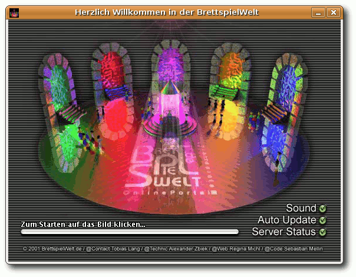
BrettSpielWelt-Startfenster.
Installation
Um an einem Spiel teilzunehmen, kann man direkt über den Browser einen Online-Client zu jedem Spiel starten. Für diesen ist ein installiertes Java-Plugin erforderlich. Wesentlich sinnvoller ist aber der Online-Client zum Herunterladen (Link), der als gepacktes tar.gz-Archiv vorliegt. Nach dem Entpacken muss man nur die Datei start.sh ausführen (z. B. per Mausklick im Dateimanager). Als Voraussetzung ist nur eine aktuelle Java-Version von Sun erforderlich. Mit GNU Java war der Client leider nicht zur Mitarbeit zu bewegen. Der Vorteil der Download-Version ist, dass Bilddaten zu einem Spiel nur einmalig heruntergeladen werden müssen. Hinweis: Der Online-Client steht auch für Microsoft Windows (alle Versionen ab Windows 95) und Mac OS X zum Download bereit. Bedienung
Startet man den Client, sieht man ein buntes Fenster (das Titelbild variiert dabei), auf das man einmal klicken muss. Hier kann man auch vor dem Start Optionen wie ,,Sound an/aus'' einstellen, was aber auch im Spiel selbst zu de/aktivieren ist. Danach erscheint ein Fenster zur Anmeldung, dabei ist eine Registrierung bei BrettSpielWelt optional. Einige Spieler bevorzugen aber das Spiel mit anderen registrierten Mitgliedern. Wer sich ohne Registrierung anmelden will, lässt das Passwortfeld leer. Man muss dann aber zwingend einen noch nicht registrierten Benutzernamen verwenden. Nach der Anmeldung erscheint ein auf den ersten Blick sehr buntes und durcheinander wirkendes Spielefenster - der Spielemanager. Die BSW-Spiele finden an bestimmten ,,Tischen'' statt. Es gibt zu jedem Spiel nur endlich viele Tische - in den meisten Fällen ist aber immer einer frei. Die Tische haben in der Übersicht verschiedene Farben:
- Hellgrün: Offene Spiele, in die man direkt einsteigen kann.
- Dunkelgrün: Offene Spiele, an deren Tisch man erst treten muss, um nachzufragen, ob man mitmachen darf.
- Braun: Entweder leere Tische oder offene Spiele, die nicht aktiv nach Mitspielern suchen.
- Violett: Bereits gestartete Spiele.
Verschiedene Farben zeigen den Spielstatus an.
Jeder Tischeintrag ist dabei gleich aufgebaut:
- Spielname (mit optionalen Erweiterungen)
- Teilnehmende Spieler
- Tischnummer und -name
- Anwesende Spieler, die noch nicht am Spiel teilnehmen
Möchte man einem offenen Spiel (hellgrüner Tisch) beitreten, klickt man mit der linken Maustaste auf einen Tisch, hält diese gedrückt und wählt ,,Beitreten''. An dunkelgrünen und violetten Tischen kann man nur ,,Zusehen'' auswählen, darf dann aber gegebenenfalls mitspielen. Ist man einem Spiel beigetreten, kann man über den Befehl /join in der Kommandozeile des Clients einsteigen und losspielen, sobald der Spieleröffner das Spiel startet. Alternativ kann man auch ,,Spiel » Join'' wählen. Hinweis: Ist das Fenster zu breit, kann man die Kommandozeile am unteren Rand nicht sehen. Leider hängt die Höhe des Chatfenster proportional von der Breite des gesamten Clientfensters ab und kann nicht separat eingestellt werden. Ein Vollbildspiel ist somit meist nicht möglich. Ein Spiel eröffnen
Um ein Spiel zu eröffnen, wählt man den Knopf ,,Mitspieler gesucht'' oben rechts und sucht sich aus der Liste ein Spiel aus. Oben links kann man dann nach ,,freie Tische'', ,,laufende Spiele'' und ,,Mitspieler gesucht'' filtern. Um ein neues Spiel zu starten, klickt man mit der linken Maustaste auf einen freien Tisch (braun), hält diese gedrückt und wählt ,,Beitreten'' oder ,,Eröffnen''. Mit ,,Beitreten'' tritt man nur an den Tisch heran und muss danach erst über ,,Join'' am Spiel teilnehmen (siehe oben). Mit ,,Eröffnen'' tritt man gleich dem Spiel bei und schickt eine ,,Mitspieler gesucht''-Nachricht an die Community. Ist man im Spiel und hat Mitspieler gefunden, startet man dieses über /start in der Eingabezeile oder den zugehörigen Menueintrag ,,Spiel » Start''. Eine genaue Anleitung zum Spielemanager findet man auf der BSW-Seite (Link). Spieleauswahl
Aktuell gibt es 73 Spiele in der BrettSpielWelt, darunter einfache Spiele wie Backgammon oder Doppelkopf, Spieleklassiker wie ,,Die Siedler von Catan'' oder ,,Carcassonne'', aber auch sehr komplexe Spiele wie ,,Die Säulen der Erde'' oder ,,Caylus''. Zu jedem Spiel gibt es eine sehr ausführliche Spielanleitung, die eigentlich alle Fragen klärt. Und sonst?
BrettSpielWelt ist mehr als nur ein Spieleportal, denn es gibt auch ein Metaspiel, welches in Städte aufgeteilt ist, bei denen jeder Teilnehmer zum Beispiel auch Berufe ausüben kann. Auch gibt es zu jedem Spiel einen Chat, in dem sich Interessenten treffen und verabreden können. Auch werden dort die Spiele oft erklärt. Die Community ist sehr freundlich, auch wenn man ein Spiel nicht kennt. In einer Testphase wurde der Autor sogar ,,an die Hand genommen''. Ein Spieler hat ihn in seine Karten schauen lassen und immer erklärt, weshalb er diesen oder jenen Zug macht. 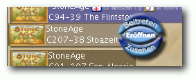
Das Spiel eröffnen, beitreten oder nur zusehen.
Wer also viele Hunderte Kilometer von seinem ,,Stammtisch'' entfernt wohnt, findet bei BrettSpielWelt sicher das ein oder andere Spiel, an denen er Spaß haben kann. Natürlich gilt aber: Ein Spiel am Küchentisch mit echten Menschen und einer Tüte Chips kann BSW nicht ersetzen. Links
http://www.brettspielwelt.de
http://www.brettspielwelt.de/Community/Download/
http://www.brettspielwelt.de/Hilfe/Manager/
| Autoreninformation |
| Dominik Wagenführ ist leidenschaftlicher Brettspieler und gibt sich gerne einer digitalen Runde ,,Carcassonne'' oder ,,Säulen der Erde'' hin, wenn er die Zeit dazu findet. |
Tipps und Tricks für den Alltag mit Linux von Christoph Langner
In steter Folge möchte ich hier versuchen, ein paar Tipps und Tricks weiterzugeben, welche die Benutzung von Linux etwas angenehmer machen. Denn manch äußerst praktische Funktion ist zwar nicht direkt offensichtlich, doch wenn man sie einmal kennt, sehr intuitiv. Alten Linuxhunden erzähle ich vermutlich olle Kamellen, doch Einsteiger und Umsteiger sollten hier Monat für Monat einen Blick reinwerfen. Folge 3: Das Arbeiten in der virtuellen Konsole
In Folge 2 der Reihe Tipps und Tricks für den Alltag mit Linux wurde auf dem Umgang mit dem Terminalfenster eingegangen. Das Thema soll nun noch ein bisschen vertieft werden. Der Begriff ,,Terminal'' selbst stammt aus der Zeit, als es noch Zentralrechner gab, die über Terminals (also Bildschirme mit Tastaturen) bedient wurden. Unter Linux finden sich noch immer virtuelle Terminals, auf die man mit der Tastenkombination Strg + Alt + F1 bis Strg + Alt + F6 wechseln kann. Hier kann man sich dann mit seinem Benutzernamen und Passwort anmelden. Mit der Tastenkombination Strg + Alt + F7 kommt man im Normalfall wieder zurück zur grafischen Benutzeroberfläche. Warum braucht man heutzutage noch diesen ,,Anachronismus''? Einerseits ist die grafische Oberfläche nur ein Zusatz zum Linuxsystem. Die virtuellen Terminals sind daher immer eine Möglichkeit zur Problemlösung, falls die grafische Desktopumgebung nicht starten möchte. Auf Serversystemen andererseits wird erst gar keine Desktopumgebung installiert. Sie würde nur Ressourcen verschwenden, da auf Server meist ohnehin via SSH bzw. über die Dienste, die sie anbieten, zugegriffen wird. Als Benutzer kommt man nur recht selten mit den virtuellen Terminals in Kontakt. Meist erst dann, wenn es ein Problem gibt und beispielsweise die grafische Desktopumgebung nicht mehr starten möchte. Daher sollte man zuvor ein paar Minuten investieren und sich ein paar essentielle Dinge aneignen, solange der ,,Leidensdruck'' nicht groß ist. Recovery-Modus
Vor den eigentlichen Tipps noch ein kleiner Exkurs in das Thema ,,Wenn mein Linux nicht mehr booten möchte''. Die meisten Linuxdistributionen integrieren eine Möglichkeit, den Rechner in einem ,,abgesicherten Modus'' zu starten. Hier wird der Rechner meist ohne eine grafische Oberfläche gestartet, externe Datenträger nicht eingebunden usw. So startet der Rechner selbst wenn irgendwo massive Probleme bestehen. Unter Ubuntu nennt sich dieser Modus ,,Recovery Mode''. Man kann ihn beim Booten im Bootmanager Grub auswählen. Hier finden sich für jeden Kernel des Systems zwei Einträge Ubuntu 8.04, kernel 2.6.24-19-generic Ubuntu 8.04, kernel 2.6.24-19- generic (recovery mode)
Der mit ,,(recovery mode)'' gekennzeichnete Eintrag würde nun den genannten Kernel in den Recovery-Modus booten. Sollte Ubuntu das einzige auf diesem Computer installierte Betriebssystem sein, so bekommt man die Auswahl üblicherweise nicht zu sehen, sondern nur GRUB Loading stage 1.5. GRUB loading, please wait... Press 'ESC' to enter the menu... 3
Nach einer kurzen Wartezeit beginnt der Bootprozess. Man muss also einmal die Taste Esc drücken. Dann wird der Bootprozess unterbrochen und man kann den Recovery-Modus auswählen. Ubuntu besitzt seit der Version 8.04 ,,Hardy Heron'' auch noch ein kleines Menü, das am Ende des Bootprozesses des Recovery-Modus angezeigt wird. Über die Option ,,root - Drop to root shell prompt'' gelangt man in ein Terminal, in dem man sich an die Lösung des Problems machen kann. Mit der Maus im virtuellen Terminal arbeiten
Das Terminal ist gar nicht so textlastig und kommando-orientiert, wie es auf den ersten Blick aussieht, denn es gibt zahlreiche Programme, die dank Ncurses (Link) etwas Farbe und Dialoge in das Terminal zaubern. Ncurses ist eine Programmbibliothek, die für Programme und Dialoge mittels Textsymbolen eine ,,grafische'' Oberfläche zur Verfügung stellt. In diesen Programmen kann man dann sogar mit der Maus arbeiten, allerdings erst, wenn das Programm gpm auf dem System läuft, was man meist über das Paket gpm nachinstallieren kann. Sofort nach der Installation kann man die Maus bewegen und sieht einen Cursor auf dem Schirm. Man kann Text selektieren und diesen dann mit der mittleren Maustaste in das Terminal einfügen. Hat man ein Programm mit einer Ncurses-Oberfläche geladen, so kann man dort nun mit der Maus Schaltflächen und Menüs anwählen. Dateimanagement: Der Midnight Commander
Dateien und Ordner im Terminal zu verwalten, kann eine mühsame Sache sein. Gerade Einsteigern gehen die Kommandos cp, mv, rm etc. nicht einfach von der Hand. Doch auch hier kann man sich helfen, sodass Dateioperationen und auch Änderungen an Dateien leichter fallen. Der Dateimanager Midnight Commander (Link) erinnert stark an den guten alten Norton Commander (Link) und ist eigentlich für jede Linuxdistribution über das Paket mc verfügbar. Das Programm ruft man dann über das Kommando $ mc
auf. Am oberen Rand findet sich ein Menü, in dem die Anzeige der linken und rechten Spalte eingestellt werden kann sowie Aktionen für die ausgewählten Dateien/Ordner ausgeführt werden können. Am unteren Rand befinden sich Schaltflächen für die wichtigsten Dateioperationen wie Kopieren, Verschieben usw. Ganz besonders wichtig sind die Funktionstasten F3 und F4, mit denen man sich Dateien ansehen bzw. sie gleich bearbeiten kann. Diese Aktionen können über die Maus (wenn gpm installiert ist) oder über die passenden Funktionstasten ausgeführt werden. 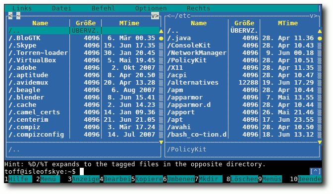
Der Midnight-Commander.
Webbrowsing: links2
Doch was passiert, wenn man ein Linux besitzt, bei dem die grafische Desktopumgebung nicht mehr starten möchte, und ein zweiter Rechner, über den man im Internet nach Hilfe suchen könnte, nicht vorhanden ist? Hier kann man sich mit einem Browser für die Konsole helfen, wofür sich das Programm links2 (Link) (über das Paket links2 nachzuinstallieren) an. Nach der Installation kann man direkt eine Webseite aufrufen: $ links2 www.ubuntuusers.de
Allerdings darf man hier nicht erwarten, dass man die gewünschte Webseite wie in einem ,,normalen'' Browser angezeigt bekommt. Nur der Text der Seite wird angezeigt. Dies reicht jedoch mit Sicherheit aus, um kurz einen Wiki-Artikel anzusehen oder einen Beitrag in einem Internetforum zu schreiben. 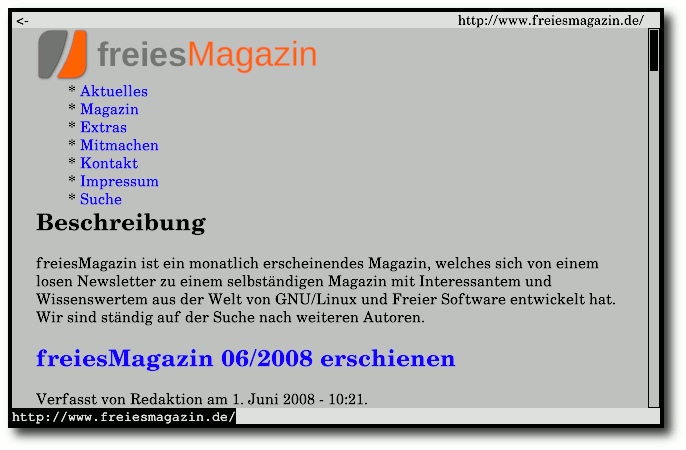
Surfen in der Konsole mit links2.
Theoretisch beherrscht links2 sogar einen grafischen Modus. Hier werden die auf einer Webseite enthaltenen Bilder angezeigt. Um in diesen Modus zu kommen, ruft man links2 einfach mit dem Schalter -g auf: $ links2 -g www.ubuntuusers.de
Allerdings funktioniert dies nicht auf jedem Linuxsystem. Ubuntu beispielsweise deaktiviert den sogenannten Framebuffer (Link) für die Konsole, da die Entwickler ihn für die Quelle vieler Probleme rund um das System ausmachen. Wer will, kann den Framebuffer bei Ubuntu recht leicht aktivieren (Link) und dann sogar in der Konsole recht komfortabel surfen. Instant Messaging: In der Konsole chatten
Letztendlich sind Chats im Notfall ein wichtiges Werkzeug. Über IRC, ICQ, Jabber und Co. kann man sich schnell Hilfe und Rat holen. Auch dafür gibt es eine Lösung für die Konsole. Das Programm CenterIM (Link) kann sich zu zahlreichen Instant-Messaging-Diensten verbinden (siehe hierzu auch den Artikel zum Vorgänger Centericq ,,Ein Schwatz in der Konsole: Centericq'' in freiesMagazin 03/2007 (Link)). Über das Kommando $ centerim
ruft man es nach der Installation des Paketes centerim auf. Am besten richtet man seine Konten innerhalb von CenterIM ein, wenn man aktuell keine Probleme mit dem System hat. So hat man im Fall der Fälle schnell einen Draht zu hilfsbereiten Menschen. 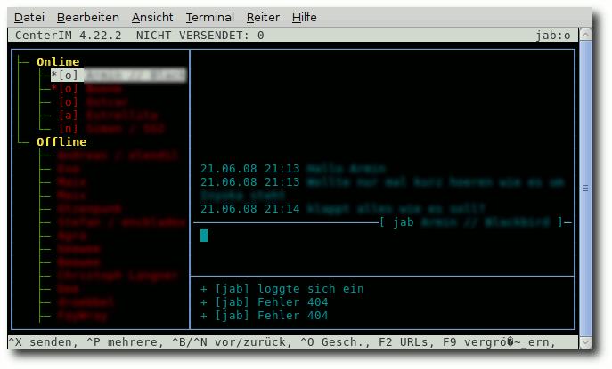
Chat in der Konsole mit CenterIM.
Links
http://de.wikipedia.org/wiki/Ncurses
http://www.ibiblio.org/mc/
http://de.wikipedia.org/wiki/Norton_Commander
http://links.twibright.com/
http://de.wikipedia.org/wiki/Framebuffer
http://wiki.ubuntuusers.de/Konsolen-Auflösung#vga_gutsy
http://www.centerim.org
http://www.freiesmagazin.de/freiesMagazin-2007-03
| Autoreninformation |
| Christoph Langner benutzt Ubuntu in der aktuellen Version Hardy Heron. Das Terminal ist ein wichtiges Werkzeug für Linux, das man allerdings erlernen muss. |
Expertenecke: Das Kommando ,,ls'' von Matthias Kietzke
Dieser Artikel stellt das Kommando ,,ls'' vor, dessen Aufgabe die Anzeige von Verzeichnisinhalten ist. Als Anwender oder Administrator ist es elementar, sich in Verzeichnissen zurechtzufinden. Das Kommando ls steht für ,,list'' und hat genau diesen Zweck. Es bietet vielfältige Parameter, wovon jedoch nur eine Handvoll für den täglichen Einsatz relevant sein dürften. Der folgende Artikel stellt sie vor und gibt Anwendungshinweise. Ein einfacher Aufruf von ls zeigt alle Dateien im aktuellen Verzeichnis. Es sei angemerkt, dass unter Linux alles Dateien sind, also auch Verzeichnisse, symbolische Links und weitere Typen. Es wird daher alles angezeigt, was sich im Verzeichnis befindet. Dabei wird eine spaltenweise Darstellung verwendet. Erweitert man das Kommando um ein Verzeichnis, wird dessen Inhalt angezeigt: $ ls /var/log
Um sich den Inhalt mehrerer Verzeichnisse anzeigen zu lassen, können diese hintereinander ergänzt werden. $ ls /var/log /home/user /opt
Um detailliertere Informationen als nur die Dateinamen zu erhalten, kann der Parameter -l (kleines L, steht für ,,long format'') verwendet werden: $ ls -l /var/log
Hierbei werden alle Dateien untereinander mit folgenden Informationen in dieser Reihenfolge angezeigt:
- Typ und Dateirechte (Unterstützt das Dateisystem ACLs und sind diese hinterlegt, wird die Anzeige durch ein ,,+'' ergänzt.)
- Anzahl der Links, die auf diese Datei zeigen
- Name des Dateibesitzers
- Name der Besitzergruppe
- Dateigröße in Bytes
- Datum der letzten Änderung (mtime)
- Der Dateiname selbst
und $ ls -ld /var/log
aus und schauen Sie sich den Unterschied an. Standardmäßig wird die Ausgabe alphabetisch sortiert. Mit dem Parameter -S erfolgt eine Sortierung nach Dateigröße, -t sortiert nach der letzten Änderung und -u nach dem letzten Zugriff. -r kehrt die jeweilige Sortierung um (beispielsweise absteigend statt aufsteigend). Um Dateilisten weiter zu verarbeiten, sind möglicherweise die Parameter -m, -p und -1 (die Zahl 1) hilfreich. Der erste gibt eine kommaseparierte Liste aus (CSV). Der zweite fügt an Verzeichnisse (Typ ,,d'') einen Schrägstrich (/) am Ende des Namens an. Der letzte Parameter gibt nur die Dateinamen aus (wie ls), jedoch untereinander statt spaltenweise. Merke: Für einen schnellen Überblick genügt $ ls -halG
Dies kann man sich per Alias (siehe ,,Einrichten von alias'' in freiesMagazin 07/2006 (Link)) beispielsweise auf das Kommando ll (doppel L) legen. Kleine Übung
1. Zeigen Sie alle Dateinamen des aktuellen Verzeichnisses an, wobei die größte Datei zuerst stehen und die Größenangabe gut lesbar formatiert sein soll. 2. Zeigen Sie alle Dateien der Verzeichnisse /home und /opt inklusive des Inhalts aller Unterverzeichnisse. 3. Zeigen Sie die Dateien des aktuellen Verzeichnisses an, aufsteigend sortiert nach ihrer letzten Änderung. Da Sie die Liste weiterverarbeiten möchten, ist eine spaltenweise Ausgabe nicht wünschenswert (Darstellung untereinander). Die Lösungen sind dort (Link) zu finden. Links
http://www.freiesmagazin.de/freiesMagazin-2007-06
| Autoreninformation |
| Matthias Kietzke ist seit Jahren begeisterter Open-Source-Fan. Als Administrator eines Internet-Service-Providers erwarb er umfangreiche Kenntnisse im professionellen Einsatz von Linux. Privat arbeitet der Autor mit Debian und MacOS, seltener auch mit Windows. In seinen Artikeln steht der Anwender im Fokus, denn dieser muss letztendlich die Lösung umsetzen und mit ihr arbeiten können - unabhängig von der Systemplattform. |
Das Erscheinungsbild von Google Earth anpassen von Christoph Langner
Google bietet Google Earth in einer nativen, also für Linux geschriebenen Version, an. Dennoch sieht Google Earth unter Linux aus wie eine Windows-Anwendung, die mittels Wine unter Linux läuft. Die Dialoge und Menüs nehmen nicht das Aussehen der Desktopumgebung an. 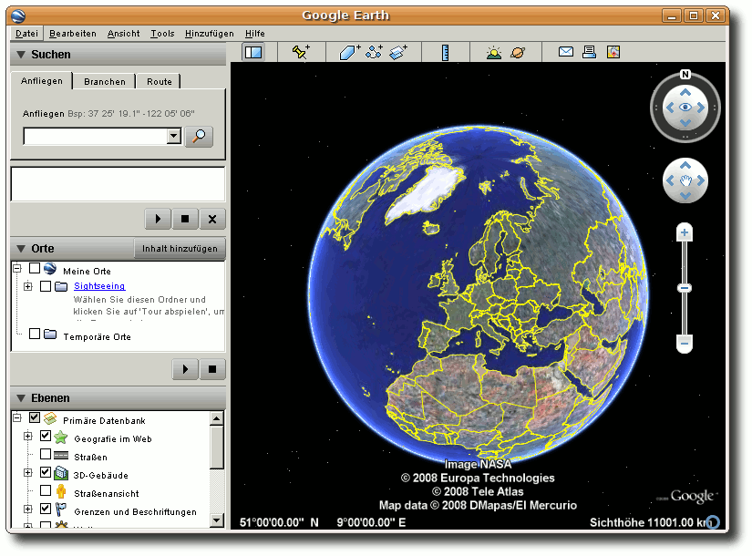
Google Earth ohne weitere Anpassung ...
Google Earth benutzt das Qt-Toolkit (Link) zum Zeichnen des Programms, dasselbe Toolkit, das auch die Desktopumgebung KDE benutzt. Dennoch fügt sich Google Earth selbst in KDE sehr schlecht ein. Dies liegt daran, dass Google Earth nicht die im System installierten Bibliotheken benutzt, sondern fest in das Programm eingebaute Bibliotheken verwendet. Im Fachjargon spricht man davon, dass diese Bibliotheken statisch verlinkt sind. Seit Google Earth 3.4 kann man das Aussehen leicht verbessern. Dazu startet man Google Earth aus einem Terminal und fügt eine Option hinzu. Anwender, die mit GNOME oder Xfce arbeiten, sollten Google Earth mit $ googleearth -style cleanlooks
starten, Benutzer von KDE mittels $ googleearth -style plastique
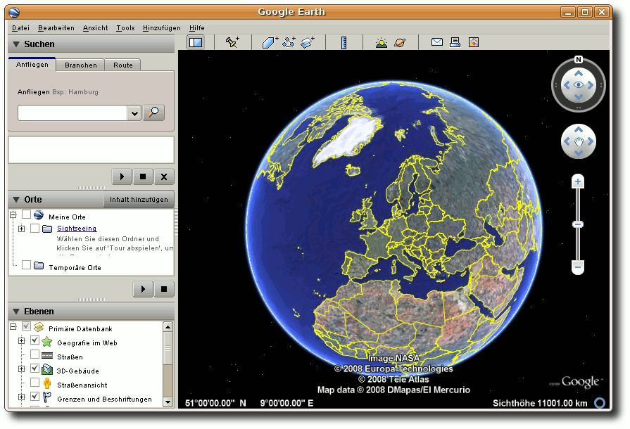
... und in der Cleanlooks-Version.
Damit man Google Earth mit dieser Einstellung auch aus den Menüs heraus starten kann, sollte man den Eintrag von Google Earth im Startmenü der Desktopumgebung ändern. In GNOME geht dies unter ,,System » Einstellungen » Hauptmenü'' bzw. in KDE durch einen Rechtsklick auf das K-Menü und dann im ,,Menü-Editor''. Sollte man die Änderung für alle Benutzer setzen wollen, so kann man alternativ auch die Datei googleearth.desktop im Ordner /usr/share/applications, durch die dieser Menüeintrag erzeugt wird, ändern. Hier kann man die gewünschte Option zur Variablen ,,Exec'' hinzufügen [Desktop Entry] Name=Google Earth GenericName=3D planet viewer Comment=Explore, search and discover the planet Exec=googleearth -style cleanlooks %f Terminal=false ...
So müssen die Anwender des Systems nicht selber ihr Menü ändern. Beim nächsten Start von Google Earth erscheint das Programm im halbwegs angepassten Stil der Desktopumgebung. Links
http://de.wikipedia.org/wiki/Qt_(Bibliothek)
| Autoreninformation |
| Christoph Langner benutzt Ubuntu in der aktuellen Version Hardy Heron. Google und seine Werkzeuge erleichtern ihm die tägliche Arbeit. |
Linpus Linux Lite - Ein Betriebssystem für mobile Computer von Dominik Wagenführ
Dass es sehr viele Linux-Distributionen gibt, ist den meisten Anwendern bekannt. Heute soll eine nicht so bekannte, dafür aber sehr leichtgewichtige Distribution vorgestellt werden, die vor allem für Ultra Mobile PCs (UMPCs) wie den Asus EeePC, Everex Cloudbook oder Northec Gecko geeignet ist: Linpus Linux 9.4 Lite. Einleitung
Die kommerzielle, auf Fedora basierende Distribution Linpus Linux wird von Linpus Technologies (Link) aus Taipei, Taiwan, speziell für den asiatischen Markt hergestellt. Die Softwareschmiede gibt es bereits seit 1999 und sie hat verschiedene Editionen der Distribution im Programm: Linpus Linux Desktop mit KDE für herkömmliche Heim-PCs und Arbeitsrechner, Linpus Linux Server für den Servermarkt, Linpus Media Center für Multimedia-PCs, das in einer abgespeckten Download-Version (ohne kommerzielle Codecs) kostenlos erhältlich ist, und zuletzt das in diesem Artikel vorgestellte Linpus Linux Lite. Letzteres gibt es erst seit Ende 2007 auf dem Markt und kommt unter anderem im Northec Gecko UMPC zum Einsatz. Da leider kein solcher Laptop zum Test zur Verfügung stand, wird das System über die für 32-bit-Rechner als Download erhältliche Live-CD in Version 9.4 getestet (Link). Da Linpus Linux Lite speziell für mobile PCs konzipiert ist, läuft es auch auf Computern mit wenig Leistung flüssig. So sind als Mindestvoraussetzung eine Intel-, AMD- oder VIA-CPU mit 366 Mhz, 512 MB Festplattenspeicher und 128 MB RAM gefordert. 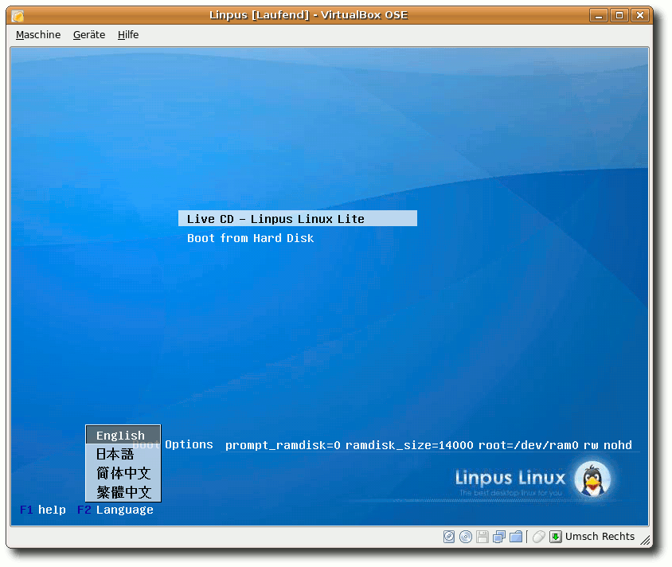
Der Startbildschirm der Live-CD.
Die Live-CD enthält neben Englisch einige asiatische Sprachen, das ,,echte'' System unterstützt aber auch Deutsch, Französisch, Italienisch, Spanisch und einige andere. Immerhin kann das Tastaturlayout im Live-System per SCIM auf Deutsch gestellt werden, aber dazu später mehr. Desktop-Oberflächen
Der Desktop basiert auf Xfce 4.4, bietet aber eine Besonderheit: Die Benutzeroberfläche kann je nach Anwender umgestellt werden. Einfache Oberfläche
Für Einsteiger gibt es eine vereinfachte Oberfläche, die nicht über herkömmliche Menüs funktioniert, sondern oben Schaltleisten mit den Bereichen ,,Internet'', ,,Work'', ,,Learn'', ,,Play'' und ,,Settings'' bietet. Klickt man einen Bereich an, ändert sich zum einen die Desktop-Hintergrundfarbe zur besseren Unterscheidung, zum anderen erscheinen darunter Kästchen mit vordefinierten Anwendungen. Das jeweilige Programm kann durch einen Klick gestartet werden. Am unteren Rand befindet sich ein Panel mit den (im Hintergrund) laufenden Programmen. 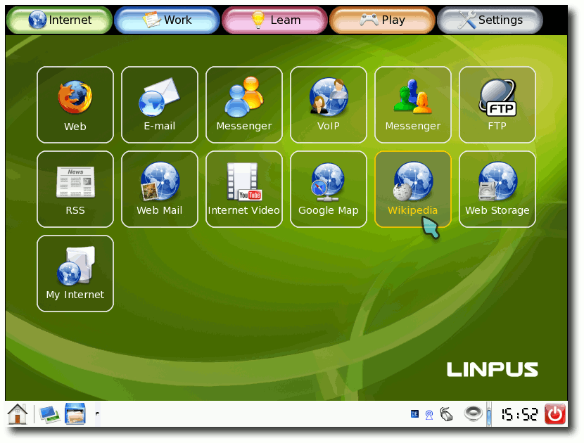
Die vereinfachte Oberfläche
(hier im Menü ,,Internet'').
Man sollte beachten, dass man im vereinfachten Modus keine Fenster vergrößern oder verkleinern kann. In der Regel läuft jede Anwendung maximiert. Zusätzlich fällt auf, dass der Cursor sehr groß gehalten ist. Bedenkt man den Einsatzzweck auf Mobilgeräten, die nur ein 4- bis 7-Zoll-Display vorweisen können, ist dies sehr sinnvoll. Die vereinfachte Oberfläche lässt sich sehr intuitiv bedienen, es gibt aber keinerlei Möglichkeit diese selbst anzupassen. Deinstallierte Programme hinterlassen zum Beispiel ein leeres Kästchen. Es wurde anscheinend davon ausgegangen, dass niemand vorinstallierte Programme entfernen will. 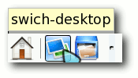
Mit dem Switch-Symbol kann man die Oberfläche wechseln.
Erweiterte Oberfläche
Klickt man links unten auf das Wechselsymbol, welches wirklich falsch geschrieben als ,,swich-desktop'' bezeichnet wird, flackert der Bildschirm kurz und es erscheint der manchen Anwendern vielleicht bekannte Xfce-Desktop. Hier das erste Achtung: Nicht auf jedem System funktioniert dieser Wechsel ohne Probleme. So kann es bei manchen TFTs passieren, dass der Bildschirm einfach nur schwarz bleibt. Ein Wechsel zurück ist dann ohne Weiteres nicht möglich. Man sieht nun unten das Xfce-Panel mitsamt Xfce-Menü (Pinguin-Kopf) links, über das man alle Anwendungen starten kann. Der Desktop verhält sich so wie bei den meisten anderen Linux-Distributionen. 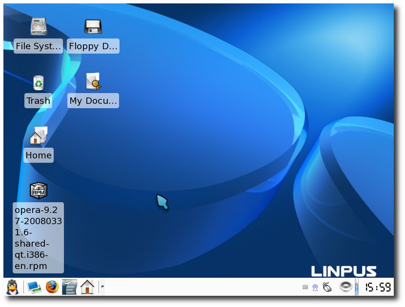
Die erweiterte Oberfläche - der Xfce-Desktop.
Anwendungen
Als Linux-Kernel in Linpus Linux Lite 9.4 kommt eine angepasste Version 2.6.20.1 zum Einsatz. Der Xfce-Desktop trägt die Versionsnummer 4.4.1 und hat dabei auch die Standard-Xfce-Anwendungen vorinstalliert: Thunar als Dateimanager, Orage als Kalenderprogramm und Mousepad als Editor. Daneben ist eine Vielzahl von Anwendungen vorinstalliert, die eigentlich alles liefern, was man sich wünscht. Die folgende Auflistung geschieht auf Basis des vereinfachten Modus (siehe oben) und soll dabei auch gleich erklären, welche Programme man wo findet. Internet
Neben Firefox 2 und Thunderbird 2 kommen vor allem Google-Anwendungen wie Google Webmail, Google Maps und YouTube (,,Internet Video'') zum Einsatz. Als Instant Messenger sind sowohl Pidgin als auch aMSN verfügbar. Weitere Anwendungen sind Ekiga für Voice-over-IP, Liferea als RSS-Feed-Reader und gFTP als FTP-Client. Interessant ist hierbei die Wahl von Microsofts Windows Live Space als ,,Web Storage''. Wie man an der Vorauswahl von YouTube sieht, läuft Flash im Browser ohne Probleme. Sowohl Videoseiten als auch Spiele oder sonstige Inhalte lassen sich abspielen bzw. anzeigen. Zum Einsatz kommt dabei Adobes Flash-Plugin in der Version 9.0.31.0. Java dagegen ist nur als GNU Java ohne Browser-Plugin vorinstalliert. Work
Als Office-Anwendung für Text-, Tabellen- und Präsentationsverarbeitung kommt OpenOffice.org in Version 2.2 zum Einsatz. Der Start hiervon dauert einige Zeit, vor allem auf Rechnern mit wenig RAM kann sich dies länger hinziehen. Der Einsatz von Abiword und Gnumeric wäre vielleicht vorzuziehen gewesen. Auch hier findet man wieder eine Google-Anwendung, um Dateien zu bearbeiten: Google Docs. Um CDs und DVDs zu brennen, wird GnomeBaker benutzt. 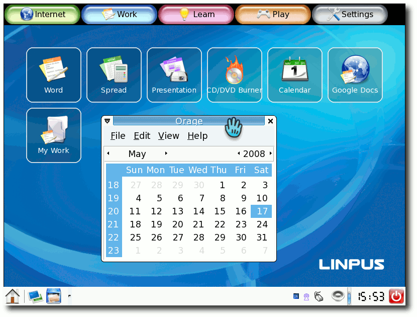
Die Anwendungen des Menüs ,,Work''.
Learn
Im Lernmenü befinden sich Programme wie TuxPaint, TuxMath und TuxTyping2. Als PDF-Betrachter wird Evince benutzt, für eBooks der FBReader. Programmieren kann man mit Linpus Linux Lite leider nicht, da zumindest per Standard kein C/C++-Compiler mitinstalliert wird. 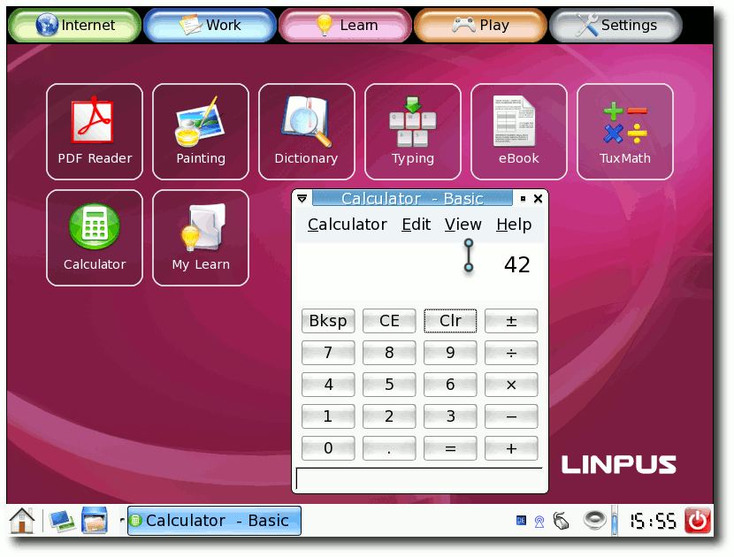
Auch Lernprogramme werden bereitgestellt.
Play
Neben zahlreichen Spielen wie FrozenBubble, SuperTux, Tetris und Breakout findet man hier auch Multimedia-Anwendungen. So wird für Videos der MPlayer benutzt, für Musikdateien Banshee. Die Verwaltung von Fotos kann man zum einen mit gThumb, aber auch mit F-Spot vornehmen. Auch ein Webcam-Viewer ist integriert, der aber aufgrund nicht vorhandener Hardware nicht getestet werden konnte. In Linpus Linux Lite sind verschiedene kommerzielle Codecs bereits vorinstalliert. So lassen sich Mp3-Musikdateien, sowie WMV- oder Quicktime-Videos ohne besondere Einstellungen abspielen. 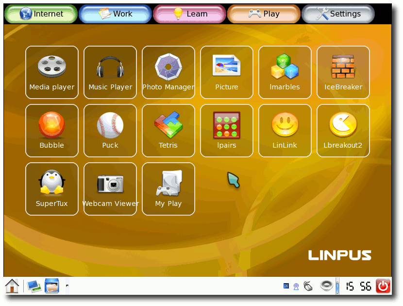
Spiele und Multimedia-Programme.
Settings
Über die Einstellungen findet man den Paketmanager Synaptic (,,Pkg Manager''), den Dateimanager Thunar (,,File Manager''), den GNOME-Systemmonitor, das Terminal und andere Konfigurationsprogramme für Netzwerk, Drucker und die Bildschirmauflösung. 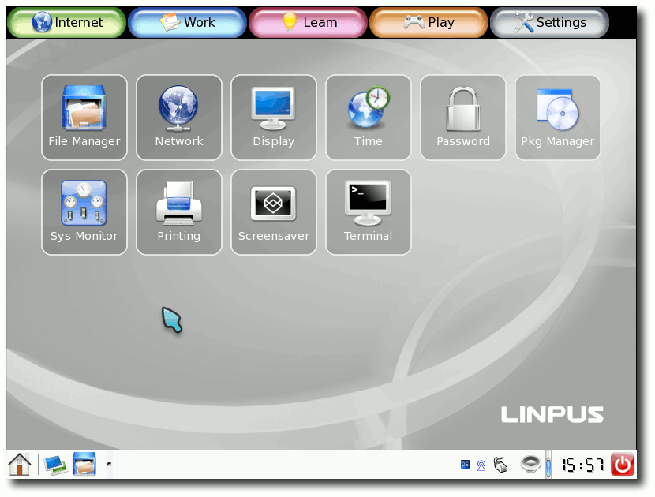
Die vereinfachten Einstellungen im Menü ,,Settings''.
Sonstiges
Im erweiterten Modus hat man zusätzlich noch Zugriff auf die Programme mtPaint, Bluetooth-Manager, die Festplattenverwaltung und verschiedene Einstellungen.

Die erweiterten Einstellungen im Xfce-Menü.
Anpassung
Man kann das System auch ein wenig anpassen. Über SCIM in der Taskleiste rechts unten kann man ein deutsches Tastaturlayout einstellen. Um dieses nicht für jede Anwendung erneut einstellen zu müssen, klickt man mit der rechten Taste auf das SCIM-Symbol und wählt ,,SCIM-Setup''. Unter dem Punkt ,,Global Setup'' muss man einen Haken bei ,,Share the same input method among all applications'' setzen. Leider vergisst SCIM die Einstellung, wenn man zwischen den verschieden Oberflächenmodi wechselt. Zusätzlich versagte der SCIM-Knopf sehr oft seinen Dienst, sodass er auf einen Linksklick einfach nicht reagierte und man das Tastaturlayout somit nicht ändern konnte. 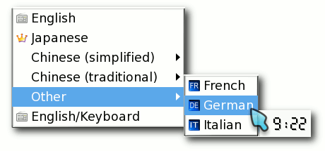
Das Tastaturlayout ändern.
Über den Paketmanager Synaptic kann man auch Programme installieren und deinstallieren. Die Installation konnte dabei aber nicht getestet werden, da keine RPM-Paketquellen für Linpus vorlagen. Es ist aber ohne Weiteres möglich, geeignete RPM-Pakete aus dem Internet zu laden, um diese dann mittels # rpm -i paketname.rpm
zu installieren. So wurde das Live-System testweise um den Browser Opera ergänzt. Fazit
Linpus Linux Lite 9.4 ist vor allem durch die zwei Eingabemodi eine für UMPCs sehr gute Linux-Distribution. Sie lässt sich intuitiv bedienen und durch eine sehr gute Hardwareunterstützung funktionierten sowohl Grafikkarte, Sound als auch Netzwerk (kein WLAN) ohne Probleme. Schade ist, dass man das System von der Live-CD nicht eigenständig auf einem PC installieren kann, um zum Beispiel seinen eigenen Mini-Laptop damit auszustatten. Gegebenenfalls lässt sich Linpus Technologies noch dazu hinreißen, wenn die Community noch etwas wächst. 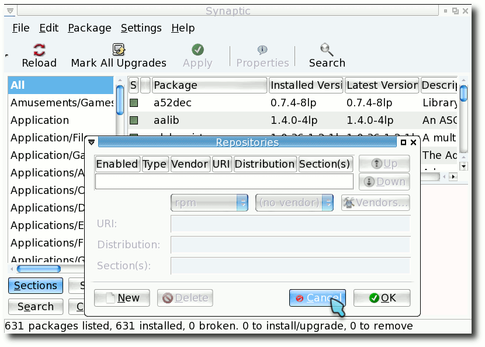
RPM-Paketquellen in Synaptic verwalten.
Dies ist nämlich auch eines der Probleme mit Linpus: Es gibt keine Community. Hauptsächlich wird dies daran liegen, dass Linpus kommerziell samt Support-Verträgen vertrieben wird und die Gemeinschaft bei der Entwicklung ausgeschlossen wird. Man kann nur hoffen, dass sich dies irgendwann einmal ändert. Links
http://www.linpus.com/
http://www.linpus.com/xampp/modules/mydownloads/viewcat.php?cid=14
| Autoreninformation |
| Dominik Wagenführ ist Ubuntu-Nutzer und beschäftigt sich gerne mit neuen und interessanten Linux-Programmen. Linpus Linux Lite hat er auf der CeBIT 2008 auf einem Asus EeePC gesehen und fand vor allem die zwei Oberflächenmodi interessant. |
Was ist Barrierefreiheit und wozu überhaupt? von Holger Daut
Barrierefreiheit bedeutet, dass eine Umgebung, ein Gerät oder eine Software für Behinderte zugänglich ist. In diesem Artikel soll sich dabei auf Computer (insbesondere mit Linux als Betriebssystem) und zukünftige mobile Systeme wie zum Beispiel Handys und PDAs auf Linuxbasis bezogen werden. Warum überhaupt Barrierefreiheit? Ganz einfach, weil es Menschen gibt, die körperlich eingeschränkt sind: zum Beispiel vom Hals abwärts gelähmt, halbseitig gelähmt, taubblind, blind bzw. sehbehindert und einiges mehr. Wie arbeiten wohl diese Menschen überhaupt am PC, welche Hilfsmittel werden verwendet und was müssen Software- und Hardware-Entwickler beachten? Verschiedene Behinderungen
Vom Hals abwärts gelähmt
Körperbehinderte, die nicht mit den üblichen Eingabegeräten arbeiten können, arbeiten per Spracheingabe und in der Regel mit einem zusätzlichen ,,Joystick'', der zumeist am Rollstuhl etc. befestigt wird und mit den noch beweglichen Körperteilen gesteuert werden kann (beispielsweise mit dem Kinn, der Wange oder, wenn es noch geht, mit dem Fuß). Zum Einsatz kommt dann eine Bildschirmtastatur, die mittels des Joysticks gesteuert wird. Zusätzlich kann durch Datenbanken navigiert werden, um vordefinierte Standardsätze oder Wörter in Texte einfügen zu können. Das Ganze geschieht dabei - weil es auch so schon irrsinnig mühselig ist - auf die Art, Buchstabe für Buchstabe anzusteuern und auszuwählen. Da diese Menschen oftmals deutlich besser Bewegungen in eine bestimmte Richtung koordinieren können (also entweder vertikal oder horizontal), gibt es zum Beispiel auch Internetseiten, die sie relativ ungern besuchen, weil allein die Ausrichtung der Menünavigation ein Hindernis wird. Es gibt natürlich auch noch Individuallösungen für verschiedene Arten von Behinderungen. In den meisten Fällen wird aber im Kern immer wieder auf dieselbe Technik zurückgegriffen und das ist sehr oft besagte Software plus Joystick-Navigation. Andere Dinge, wie zum Beispiel die Steuerung über die Pupillen, durch Zwinkern der Augen usw., sind eher experimentelle Systeme, aber auch das gibt es. Halbseitig gelähmt
Für diese Recherche habe ich mit einer E-Mail-Bekanntschaft Kontakt aufgenommen. Ihr Name ist Petra Ritter und sie ist rechts halbseitig gelähmt und zwar von Geburt an. Zusätzlich sieht sie auf einem Auge nur ca. 25 %, auf dem anderen erkennt sie nur noch Farben und Umrisse. Durch die Halbseitenlähmung ist auch ihre Aussprache undeutlich, da die Mundmuskulatur von der halbseitigen Lähmung betroffen ist. Sie verwendet JAWS und eine Braille-Zeile, da sie mit einem Vergrößerungsprogramm auf Dauer nicht zurechtkommt, außerdem benutzt sie eine Standard-PC-Tastatur und schreibt im 5-Finger-System. Sie hat auch schon Erfahrungen mit Einhand-Tastaturen gemacht, ist aber nie zufrieden gewesen. Beruflich arbeitet sie als IT-Fachfrau (Accessibility) bei der Stiftung ,,Zugang für alle'' (Link). Diese Tätigkeit bringt es mit sich, dass sie gelegentlich unterrichtet und auf ,,fremden'' Systemen arbeiten muss. Der Einsatz einer Spezialtastatur ist daher ungünstig. Sie muss in der Lage sein, mit einem ,,normalen'' JAWS-System zu arbeiten. Beim 5-Finger-System schreibt man mit einer Hand (in diesem Fall mit der linken). Die Grundstellung für die Finger sieht wie folgt aus: J - Zeigefinger, H - Mittelfinger, G - Ringfinger, F - kleiner Finger. Der Zeigefinger bedient alle Tasten (einschließlich der genannten) rechts von 7 , U , J , M inklusive der Umlaute, Sonderzeichen, Eingabetaste und Backspace. Der Mittelfinger bedient die Tasten 6 , Z , H , N , der Ringfinger bedient die Tasten 5 , T , G , B und der kleine Finger bedient alle Tasten (einschließlich der genannten) links von 4 , R , F , V inklusive Strg , Shift , Tab und Alt. Der Daumen bedient die Leertaste. Auf der Seite AboutOneHandTyping (Link) findet man das System nochmals (auf Englisch) erklärt. Bei den Einhandtastaturen gibt es zwei unterschiedliche Bauweisen. Die eine verfügt über alle Tasten einer Standard-Tastatur, sie sind nur komplett anders angeordnet. So gibt es zum Beispiel Tastaturen, die die Tasten in einer halbrunden Form angeordnet haben. Die Tasten sind bei diesen Tastaturen auf der Innenseite eines Viertels einer Halbkugel angeordnet. Das Ganze erinnert an einen Teil einer Schüssel, die in vier gleich große (Kuchen)-Stücke zerbrochen ist. An der Innenseite eines der ,,Kuchen-Stücke'' sind alle Tasten der Standard-Tastatur befestigt, sodass die Hand in einer halbrunden Form liegt und man von dort aus alle Tasten erreicht (Bild auf onehandedkeyboard.com (Link)). Die zweite Bauart von Einhandtastaturen besitzen nur wenige Tasten und man muss mehrere Tasten gleichzeitig drücken, wenn man einen bestimmten Buchstaben schreiben will. Dies ist ähnlich zu einer Blindenschrift-Tastatur (Bild auf browsers-mmc.de (Link)). Taubblind
Solche Menschen können das Internet in den meisten Fällen fast gar nicht nutzen, da sie verständlicherweise mit einem ganz erheblich reduziertem Sprachschatz auskommen müssen und 75 % der Wörter überhaupt nicht interpretieren können. Wer erst später im Leben taub wurde und zuvor ganz normal Schrift und Sprache erlernen konnte, kann mit Hilfsmitteln wie der Braillezeile natürlich arbeiten. Blind bzw. sehbehindert
Blinde benutzen einen Screenreader und - wenn sie von der Krankenkasse oder einem anderen Leistungsträger bezahlt wurde - eine Braillezeile. Braillezeilen sind sehr teuer, sie kosten ab 4000 Euro aufwärts. Die Preise für kommerzielle Screenreader unter Windows beginnen ab 1000 Euro, was noch zu bezahlen wäre, allerdings ist die Lizenzpolitik dann wieder das Aus für Blinde, die mehr als einen Rechner haben oder ihr System mehrmals neu aufsetzen müssen. Die Lizenzschlüssel lassen sich nur dreimal nutzen und nach der dritten Installation muss man sich eine neue Lizenz für mindestens 500 Euro kaufen. Das ist auch einer der Gründe, warum viele Blinde an Linux interessiert sind; es gibt keine kostenaufwendige Lizenzpolitik. Das gleiche gilt auch für Handys und PDAs. Dort sind die Programme zwar meist ein bisschen billiger, aber es besteht dasselbe Lizenzproblem. Für Sehbehinderte gibt es Bildschirmlupen, die sogar meist in den Screenreadern integriert sind. Zusätzlich arbeiten die meisten Sehbehinderten mit kontrastreichen Desktopthemes. Bei vielen Arbeitsplätzen für Sehbehinderte ist am PC bzw. Bildschirm noch ein Bildschirmlesegerät angeschlossen. Dabei handelt es sich um eine Kamera, die ein Dokument vergrößert auf dem Bildschirm darstellt. Mit einem ,,Taster'' kann man zwischen Rechner und Bildschirmlesegerät hin und her schalten oder den Bildschirm teilen (z. B. Rechneranzeige auf der unteren Bildschirmhälfte, Bildschirmlesegerät auf der obere Hälfte). Schnittstellen und Treiber
Hilfstechnologien sind auf Schnittstellen und Treiber angewiesen, um mit Programmen, die sie auslesen oder ausführbar machen sollen, zu kommunizieren. Man kann sich das so vorstellen, dass sich zum Beispiel der Screenreader mit einem anderen Programm über die entsprechenden Schnittstellen unterhält, um dem Benutzer eine Meldung vorzulesen, diese auf der Braillezeile anzeigt oder die Bildschirmlupe auf dieses Dialogfeld springt, um es anzuzeigen. Kann das Programm nicht über diese Schnittstelle kommunizieren, arbeitet der Screenreader nicht korrekt. Im schlimmsten Fall schweigt die Sprachausgabe, die Zeile streikt oder die Lupe wechselt nicht auf das Dialogfeld. Meist behebt sich dieser Fehler, wenn die nicht auslesbaren Anwendungen geschlossen werden oder es erfolgt ein Totalausfall. Es kann auch vorkommen, dass das Programm zwar ausgelesen wird, aber nicht der anzuzeigende Dateiinhalt. Das passiert zum Beispiel bei PDF-Dateien. Einzige Abhilfe ist es, die PDF-Datei in ein kompatibles Format zu konvertieren. Hierzu kann man die OCR-Software ,,Abby Finereader'' für Windows benutzen. Im übrigen ist eine OCR-Software für Blinde unbedingt notwendig, um beispielsweise Briefe und andere Dokumente in Papierform lesen zu können. Leider ist dem Autor keine OCR-Software für Linux bekannt. Es soll zwar eine Linuxversion des Finereaders geben, die aber sehr teuer ist und nur Firmen vorbehalten sein soll. Natürlich gehört zu einem barrierefreien System, dass man es auch als behinderter Mensch von Grund auf installieren kann. So wird zum Beispiel bei Ubuntu eine sprachgestützte Installation bei der Live-CD angeboten, die aber auch noch nicht so ganz funktioniert. So muss man am Ende den Screenreader Orca beenden und dann blind im GNOME-Terminal mit Root-Rechten neu starten. Wenn man natürlich im Besitz einer neuen und unterstützten USB-Braillezeile ist, kann man auch die Alternate-CD nutzen, da solche Zeilen meist automatisch erkannt werden. Bei mobilen Geräten wie Handy und PDAs sollte es genauso sein, sodass Screenreader und andere Hilfstechnologien schon Teil des normalen Betriebssystems sind und bei Bedarf nur noch aktiviert werden müssen. Handyhersteller wie Nokia haben zwar manchmal bei neueren Handys zwar eine so genannte Sprachhilfe, die aber sinnlos ist, weil man sich erst einmal blind zu diesem Menüpunkt vorarbeiten muss. Und auch dann kann man mit dem Handy nichts anfangen, außer sich die Uhrzeit, die letzten Anrufe und die zuletzt gewählten Nummern vorlesen zu lassen. Leider geht der Trend bei Handys und PDAs immer mehr in Richtung noch kleinerer Tastaturen und Touchscreens, die dann für Behinderte mit motorischen Einschränkungen und Blinde nicht mehr zu bedienen sind. Natürlich gibt es auch Screenreader (mit Vergrößerung) für Handys wie zum Beispiel ,,Talks und Mobile speak'' der Firma Code Factory. Die Software gibt es nicht nur für Symbian-Handys, sondern auch für Pocket-PCs und Handys auf Windowsbasis. ,,Natürlich'' sind solche Programme wie ,,Talks und Mobile speak'' nicht Open Source. Leider muss man beobachten, dass Linux und andere Open-Source-Lösungen bei den Hilfsmitteln noch gar keinen Einzug gehalten haben! So gibt es zur Zeit nur einen Open-Source-Screenreader für Windows namens ,,NVDA'' (Link). Die Frage, die sich jetzt viele Entwickler stellen werden: ,,Warum soll ich bei meinen Programmen und ggf. Hardware solch einen Aufwand betreiben?'' Ganz einfach: Es kann jeden betreffen, denn solche Behinderungen sind nicht immer ein genetischer Defekt, sondern auch sehr häufig unfallbedingt. Links
http://www.access-for-all.ch
http://www.aboutonehandtyping.com/howto.html
http://www.onehandedkeyboard.com/maltron.html
http://www.browsers-mmc.de/datenbank/produkt.php?art=wwi
http://www.nvda-project.org
| Autoreninformation |
| Holger Daut ist blind und beschäftigt sich daher schon seit Jahren mit Linux und der Zugänglichkeit für Behinderte. Seine Erfahrungen zeigen, dass Linux bei diesem Thema auf dem richtigen Weg, aber noch längst nicht am Ziel ist. Zum Arbeiten setzt er Ubuntu 8.04 ein. |
Barrierefreies GNU/Linux? von Thorsten Schmidt
Webseiten möglichst zugänglich zu gestalten, hat sich in den letzten Jahren mehr und mehr durchgesetzt. Wie aber steht es damit auf Seiten der Betriebssysteme und Applikationen, gerade wenn ihre Benutzer sehbehindert oder blind sind und sich für Freie Software entscheiden? Um Antworten auf diese Frage zu bekommen, stand Simon Bienlein, Betreiber der Seite linux-fuer-blinde.de (Link), freiesMagazin auskunftsfreudig zur Seite. freiesMagazin: Stelle dich doch bitte mal kurz vor: Name, Alter und was machst du beruflich?
Simon Bienlein: Mein Name ist Simon Bienlein. Ich bin 24 Jahre alt und bei der Bundesagentur für Arbeit als Softwareentwickler tätig. freiesMagazin: Wann und aus welcher Motivation heraus bist du zu Linux und Freier Software gekommen?
Simon Bienlein: Im Rahmen meiner Ausbildung zum Informatikkaufmann beschäftigten wir uns mit Linux. Damals arbeiteten wir mit SUSE Linux. Da das Konfigurationstool YAST nicht gut bedienbar und eine selbstständige Installation der Distribution nicht möglich war, suchte ich nach einer anderen Distribution. So kam ich zu Debian. Ich fand es sehr praktisch, dass man ein System via SSH aus der Ferne administrieren kann. Unter Windows war dies lange Zeit nicht möglich und ist auch jetzt eine sehr kostspielige Angelegenheit, die nicht ohne bestimmte Voraussetzungen möglich ist. freiesMagazin: Was sind deine Haupttätigkeiten am Rechner?
Simon Bienlein: Ich verwende den Rechner zum Mailen, Surfen, Musik hören, Brennen und Instant Messaging usw. 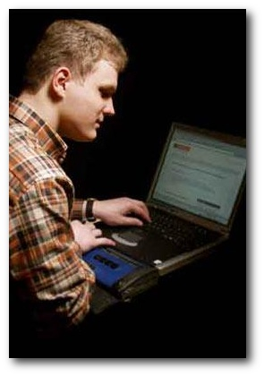
Simon Bienlein.
freiesMagazin: Da du ja beruflich im Bereich Webdesign tätig bist: Welchen Eindruck hast du in punkto ,,Barrierefreiheit'' im Netz?
Simon Bienlein: Viele Internetseiten lassen sich mehr oder weniger gut bedienen. Eine Website ist aber nicht gleich barrierefrei, wenn sie von einem blinden Anwender bedient werden kann. Barrierefreiheit ist noch mehr. Da geht es um Kontraste und um Belange für z. B. motorisch behinderte Menschen. Daher spreche ich bevorzugt von zugänglichen oder bedienbaren Websites. freiesMagazin: Hat sich da viel zugunsten Sehbehinderter und Blinder in den letzten Jahren getan?
Simon Bienlein: Das Thema Barrierefreiheit hat dazu beigetragen, dass Entwickler und Entscheider ihren Horizont erweitert haben bzw. erweitern mussten. Viele Leute haben vielleicht einfach noch nicht an Menschen mit Behinderung und deren Anforderungen gedacht. Schließlich sehen die erstellten Internetauftritte für sehende Besucher gut aus. Da macht man sich nicht unbedingt Gedanken über Personen mit einer Behinderung, zumal man oft nichts über deren PC-Möglichkeiten weiß. freiesMagazin: Stand der Dinge: Kann man als Blinder nun weitgehend uneingeschränkt die vorhandenen Webangebote nutzen? Denke hier auch an die praktischen Angebote wie Fahrkarten- oder CD-Kauf, Wegbeschreibungen usw.
Simon Bienlein: Fahrkarten habe ich noch nicht online bestellt. Viele Shops sind aber bedienbar. Ein Problem hat man z. B., wenn die Preise durch nicht beschriftete und nichtssagende Grafiken dargestellt werden. Wenn ich den Preis der Produkte nicht kenne, suche ich eben einen anderen Shop. Wenn der Screenreader mit dem Einsatz von Javascript oder Flash nichts oder wenig anfangen kann, muss man sich ggf. eine andere Website suchen oder sehende Hilfe in Anspruch nehmen. freiesMagazin: Was ist mit der sogenannten ,,Web 2.0''-Technologie? Ist das hilfreich oder eher hinderlich? - Denke hier beispielsweise an das Konzept Ajax oder Captchas.
Simon Bienlein: Captchas sind durchaus ein Problem. Die Grafiken sollen ja bewusst nicht von Programmen ausgelesen werden können. Es gibt z. B. die Möglichkeit, eine Audioversion anzubieten. Wenn man keine Audiodateien wiedergeben kann oder der Besucher eine Hörbehinderung hat, ist auch dies ausgeschlossen. Recht praktisch sind textuelle Captchas. Diese können von Menschen gelesen und oft gelöst werden, während Programme damit ihre Schwierigkeiten haben sollten. Ich habe aber auch schon sehende Besucher erlebt, die ein Captcha erst beim x-ten Versuch entziffern konnten.
Ajax ist auch problematisch, wenn der Screenreader mit der ständigen Aktualisierung der Website nicht klar kommt oder dem Anwender gar nicht mitteilt, dass auf ein Element geklickt werden kann. Dann kommen einem Elemente wie normaler Text vor und man bekommt nur durch Zufall heraus, dass es sich um anklickbare Inhalte handelt.
| Hintergrundinformation |
| Die Braillezeile bildet das Ausgabemedium der gleichnamigen Blindenschrift. Je nach Bauart können 20, 40 oder 80 Schriftzeichen angezeigt werden. Jedes Schriftzeichen besteht aus einer drei- oder vierzeiligen Reihe zweier Öffnungen, in denen Stifte ruhen. Je nachdem, welches Schriftzeichen unserer Schriftsprache repräsentiert werden soll, wird eine bestimmte Kombination der Stifte nach oben bewegt, sodass man sie ertasten kann. Ein geübter Leser ist in der Lage cirka 100 Worte pro Minute zu lesen. |
Simon Bienlein: Als Eingabemedium verwende ich eine normale Tastatur. Der Screenreader ist ein Programm, das den Inhalt der Anwendung aufbereitet und z. B. über eine Sprachausgabe ausgeben kann. Mit einer Braillezeile kann der Inhalt des Bildschirms mit den Fingern gelesen werden. Da sich die Darstellung von Sprachausgabe und Braillezeile unterscheiden können, werden diese Ausgabegeräte oft in Kombination eingesetzt. freiesMagazin: Braillezeile, Screenreader und Sprachsynthesizer sind also die wesentlichen Geräte, auf die Blinde angewiesen sind. Stichwort ,,Braillezeile'': Unterstützen die Hersteller von Braillezeilen Linux mit Treibern etc.?
Simon Bienlein: Auch neuere Braillezeilen können unter Linux verwendet werden. Soweit mir bekannt ist, werden die Informationen bereitgestellt. freiesMagazin: Welche hast davon du ausprobiert oder nutzt du und wie sind deine Erfahrungen diesbezüglich?
Simon Bienlein: Da ich unter Windows den Screenreader JAWS mit der IBM-Sprachausgabe verwende, nutze ich auch diese Sprachausgabe bevorzugt unter Linux. Vorübergehend habe ich aber auch schon mit eSpeak gearbeitet. freiesMagazin: Die Installation dieser Software setzt ja ein bereits funktionierendes System voraus. Gibt es Linux-Distributionen, die speziell für blinde Nutzer entworfen sind?
Simon Bienlein: Aktuell ist mir keine Distribution speziell für blinde Anwender bekannt. Seit ich Debian verwende, musste ich mich aber auch nicht mehr danach umschauen. Der textbasierte Installer von Debian ist sehr gut mit einer Braillezeile bedienbar. Ubuntu kann man auch mittels Sprachausgabe installieren. Das habe ich bisher aber noch nicht ausprobiert. freiesMagazin: Welche von diesen Distributionen hast du mit welchem Erfolg ausprobiert?
Simon Bienlein: Seit ein paar Jahren verwende ich Debian GNU/Linux, da man diese Distribution mit einer Braillezeile selbstständig installieren kann. Bei der Ubuntu-Version 7.10 gab es einen kleinen Bug, der den Start der Braillezeile nach der Installation verhinderte. Wie es mit der aktuellen Ubuntu-Version aussieht, kann ich noch nicht sagen.
| Hintergrundinformation |
| Der Screenreader liest, wie der Name schon sagt, den Bildschirminhalt aus und leitet Ausgelesenes entweder an die Braillezeile oder an den Sprachsynthesizer weiter. Aktuelle Projekte zum Screenreader sind BrlTTY (Link) und SUSE Blinux (Link). Um die Sprachausgabe kümmern sich zurzeit die Projekte Mbrola (Link), eSpeak (Link) und Festival (Link). Ein weiteres Projekt ist das auf IBMs Viavoice und anderen Sprachausgaben aufbauende Voxin (Link). |
Simon Bienlein: Die Unterstützung der Sprachausgabe würde voraussetzen, dass es eine GPL-Sprachsynthese gibt und der Soundkartentreiber geladen wurde. Ob man eine Distribution problemlos mit einer Softwaresprachausgabe installieren kann, kann ich nicht sagen. Einen distributionsunabhängigen Vergleich müsste man noch einmal vornehmen. Die Unterstützung einer Braillezeile sollte aber mit weniger Problemen und Schwierigkeiten funktionieren, wenn es der Installer zulässt. Der Ubuntu-Installer soll mit dem Screenreader Orca (Link) und den mitgelieferten Sprachausgaben installiert werden können. freiesMagazin: Ich weiß vom Hörensagen, dass viele Blinde unter Linux hauptsächlich die Konsole als Arbeitsumgebung nutzen. Bietet das tatsächlich Vorteile oder hat man hier aus der Not eine Tugend gemacht? Und wie sind deine Erfahrungen unter X?
Simon Bienlein: Wenn man eine grafische Oberfläche verwendet, arbeitet man eigentlich auch nur mehr oder weniger textorientiert. Man arbeitet ja nur mit der textuellen Repräsentation der verwendeten Grafik. Gerade für Windows gibt es leistungsfähige Screenreader, die eine komfortable Arbeit ermöglichen. Da es für den Linux-Desktop lange keine Screenreader und Schnittstellen gab, arbeitete man eben textorientiert auf der Konsole. Das geht in der Regel auch sehr schnell. Trotzdem ist die Arbeit mit dem Desktop und bedienerfreundlicheren Anwendungen erstrebenswert und zu unterstützen. freiesMagazin: Mit dem GNOME-Projekt ,,ATK'', dem Accessibility Toolkit, versucht man, desktopunabhängige Schnittstellen bereitzustellen, auf die beliebige Programme dann Zugriff haben können. Hast du diese Entwicklung verfolgt und davon auch schon profitiert? Angeblich soll Firefox 3 diese Schnittstelle nutzen. Mit Blick auf Orca wäre das doch ein Gewinn, oder? Simon Bienlein: Gerade mit dem Firefox-Webbrowser kann man zunehmend komfortabler im Internet surfen. Aber auch andere Programme, die diese Schnittstellen nutzen, sind gut bedienbar. Hier kann z. B. Pidgin genannt werden. 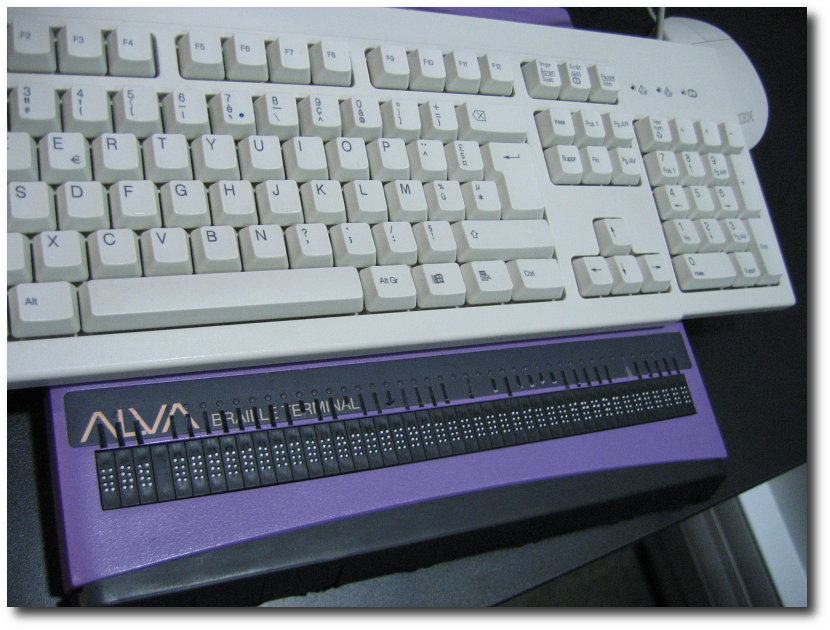
Eine Braillezeile.
© Matthieu Faure (GFDL)
{kind=link}
freiesMagazin: Welche Software benutzt du für das tägliche Allerlei: Also für Mail, Web, Office, Musikhören etc.? Falls du diese Sachen hauptsächlich unter Windows machst, kannst du vielleicht auch noch berichten, wie hier der Stand der Dinge unter Linux ist - soweit du das weißt.
Simon Bienlein: Im Moment verwende ich noch Windows für meine tägliche Arbeit. Das liegt aber daran, dass mein Laptop langsam aber sicher an seine Grenzen kommt. Außerdem fehlt mir aktuell etwas die nötige Zeit. Unter Linux kann man z. B. gut mit dem Firefox Webbrowser surfen oder mit Pidgin chatten. OpenOffice.org habe ich noch keinem ausführlichen Test unterzogen. Textbasierte Mail-User-Agents lassen sich auch bedienen. freiesMagazin: Warum sollten blinde oder sehbehinderte Nutzer einen Versuch mit Linux wagen? Wo siehst du mittelfristig Vorteile?
An Freier Software kann sich jeder beteiligen. Wenn eine Anwendung nicht bedienbar ist, kann man dafür sorgen, dass sich eventuell jemand darum kümmert oder selbst die erforderliche Anpassung vornehmen. Da Linux auch zunehmend in Behörden oder Unternehmen einzieht, sollte man diesen Trend nicht verpassen. freiesMagazin: Einen letzten Tipp deinerseits an blinde/sehbehinderte Nutzer, Entwickler, Unterstützer etc.?
Simon Bienlein: Wenn eine Software von möglichst vielen Menschen verwendet werden soll, sollte man z. B. auch auf die Bedienbarkeit per Tastatur achten und Accessibility-Schnittstellen unterstützen. Wer den Computer gerne auch in der Freizeit verwendet, sollte ruhig einmal über den Tellerrand schauen und Freier Software eine Chance geben. So lernt man Alternativen kennen und kann sich für die passende Software entscheiden. freiesMagazin bedankt sich bei Simon Bienlein für das Interview. Links
http://www.linux-fuer-blinde.de/
http://live.gnome.org/Orca
http://dave.mielke.cc/brltty/
http://ftp.suse.com/pub/projects/blinux/
http://tcts.fpms.ac.be/synthesis/mbrola.html
http://eSpeak.sourceforge.net
http://www.cstr.ed.ac.uk/projects/festival/
http://live.gnome.org/Orca
Zum Index
Veranstaltungskalender
Jeden Monat gibt es zahlreiche Anwendertreffen und Messen in Deutschland und viele davon sogar in Ihrer Umgebung. Mit diesem Kalender verpassen Sie davon keine mehr. Hinweis: Ein Strich (-) als Angabe bedeutet, dass diese Information zur Zeit der Veröffentlichung noch nicht vorhanden war.
| Messen | ||||
| Veranstaltung | Ort | Datum | Eintritt | Link |
| LBW 2008 | Samnaun-Compatsch | 09.08.-17.08.08 | frei | http://lbw2008.palfreman.com |
| FrOSCon | Sankt Augustin | 23.08-24.08.08 | 5 EUR | http://www.froscon.de |
| OpenExpo | Zürich | 24.09.-25.09.08 | frei | http://www.openexpo.ch |
| Bodensee-Linux-Tag | Singen | 26.09.08 | - | http://www.linux-bodensee.eu |
| Linux Infotag | Landau | 18.10.08 | frei | http://infotag.lug-ld.de/ |
| Linux Infotag | Brandenburg | 01.11.08 | - | http://www.linuxinfotag-brb.de |
| Linux Infotag | Dresden | 08.11.08 | - | http://www.linux-info-tag.de |
| LinuxWorld Conference & Expo NL | Utrecht | 12.11.-13.11.08 | - | http://www.linux-world.nl |
| come2linux | Essen | 15.11.-16.11.08 | - | http://www.come2linux.org/psp |
| Anwendertreffen | ||||
| Datum und Uhrzeit | Ort | Treffpunkt | Termin steht fest? | Link |
| 08.07.08, 19:00 Uhr | Lüneburg | Comodo | ja | http://luene-lug.org/wp/ |
| 08.07.08, 20:00 Uhr | Marburg | Jornal | ja | http://www.mr-lug.de/ |
| 09.07.08, 19:00 Uhr | Hessigheim | Pizzeria Neckartal | ja | http://linuxwiki.de/LugLudwigsburg/Treffen |
| 09.07.08, 19:00 Uhr | Langen | Alte Scheune | ja | http://www.lalug.net |
| 09.07.08, 19:30 Uhr | Eisenach | Cafe Spiegler | ja | http://lug-eisenach.de/ |
| 11.07.08, 19:00 Uhr | Kreuzlingen | InetCenter | ja | http://www.linuxtreff.ch |
| 14.07.08, 20:00 Uhr | Paderborn | Feuerstein | ja | http://lug-owl.de/Events |
| 15.07.08, 20:00 Uhr | Fulda | Academica Fulda | ja | http://lug.rhoen.de |
| 16.07.08, 19:00 Uhr | Luwigsburg | VfB-Gaststätte Tamm | ja | http://linuxwiki.de/LugLudwigsburg/Treffen |
| 16.07.08, 20:00 Uhr | Herford | Recyclingbörse | ja | http://lug-owl.de/Events |
| Anwendertreffen (Fortsetzung) | ||||
| Datum und Uhrzeit | Ort | Treffpunkt | Termin steht fest? | Link |
| 16.07.08, 20:00 Uhr | Rheda-Wiedenbrück | Jägerheim | ja | http://lug-owl.de/Events |
| 17.07.08, 19:00 Uhr | Dortmund | Kronenstübchen | ja | http://ubuntu-do.de/ |
| 17.07.08, 20:00 Uhr | Marburg | Jornal | ja | http://www.mr-lug.de/ |
| 18.07.08, 19:00 Uhr | Kreuzlingen | InetCenter | ja | http://www.linuxtreff.ch |
| 21.07.08, 19:30 Uhr | Bielefeld | Unimax | ja | http://lug-owl.de/Events/ |
| 21.07.08, 19:30 Uhr | Krefeld | Limericks | ja | http://wiki.lug-kr.de/wiki/LugTreffen |
| 21.07.08, 20:00 Uhr | Ottobrunn | Weinstube | ja | http://www.lug-ottobrunn.de |
| 22.07.08, 19:00 Uhr | Lüneburg | Comodo | ja | http://luene-lug.org/wp/ |
| 23.07.08, 19:00 Uhr | Hessigheim | Pizzeria Neckartal | ja | http://linuxwiki.de/LugLudwigsburg/Treffen |
| 23.07.08, 19:30 Uhr | Eisenach | Cafe Spiegler | ja | http://lug-eisenach.de/ |
| 25.07.08, 19:00 Uhr | Flensburg | Treffpunkt Mürwik | ja | http://www.lugfl.de |
| 25.07.08, 19:00 Uhr | Kreuzlingen | InetCenter | ja | http://www.linuxtreff.ch |
| 28.07.08, 20:00 Uhr | Detmold | Zum Neuen Krug | ja | http://lug-owl.de/Events/ |
| 30.07.08, 19:00 Uhr | Luwigsburg | VfB-Gaststätte Tamm | ja | http://linuxwiki.de/LugLudwigsburg/Treffen |
| 30.07.08, 20:00 Uhr | Herford | Recyclingbörse | ja | http://lug-owl.de/Events |
| 31.07.08, 19:00 Uhr | Dortmund | Kronenstübchen | ja | http://ubuntu-do.de/ |
| 01.08.08, 19:00 Uhr | Kreuzlingen | InetCenter | ja | http://www.linuxtreff.ch |
Konventionen
An einigen Stellen benutzen wir Sonderzeichen mit einer bestimmten Bedeutung. Diese sind hier zusammengefasst:
| $: | Shell-Prompt |
| #: | Prompt einer Root-Shell - Ubuntu-Nutzer können hier auch einfach in einer normalen Shell ein ,,sudo'' vor die Befehle setzen. |
| ~: | Abkürzung für das eigene Benutzerverzeichnis /home/BENUTZERNAME |
Lösungen zu den Übungen
Im Folgenden die Lösungen zu den Übungen dort (Link): 1. Zeigen Sie alle Dateinamen des aktuellen Verzeichnisses, wobei die Größte zuerst stehen und die Größenangabe gut lesbar formatiert sein soll:
$ ls -lSh
2. Zeigen Sie alle Dateien der Verzeichnisse /home und /opt inklusive des Inhalts aller Unterverzeichnisse:
$ ls -R /home /opt
3. Zeigen Sie die Dateien des aktuellen Verzeichnisses, aufsteigend sortiert nach ihrer letzten Änderung. Da Sie die Liste weiterverarbeiten möchten, ist eine spaltenweise Ausgabe nicht wünschenswert (Darstellung untereinander):
$ ls -rt1
(am Ende eine ,,Eins'', kein kleines L).
| Impressum | |
| freiesMagazin erscheint als PDF und HTML einmal monatlich. | |
| Redaktionsschluss für die August-Ausgabe: 23. Juli 2008 | |
| Redaktion, Satz und Layout | |
| Eva Drud (ViSdP) | |
| Dominik Wagenführ | |
| Kontakt | |
| Postanschrift | freiesMagazin |
| c/o Eva Drud | |
| Rübenkamp 88 | |
| 22307 Hamburg | |
| Webpräsenz | http://www.freiesmagazin.de |
| Logo-Design | |
| Arne Weinberg | |
| Lizenz | GNU FDL |
| Korrektorat | |
| Mathias Menzer | |
| Thorsten Schmidt | |
| Erscheinungsdatum: 8. Juli 2008 | ||
| Autoren dieser Ausgabe | ||
| Holger Daut | ||
| Matthias Kietzke | ||
| Christoph Langner | ||
| Thorsten Schmidt | ||
| Dominik Wagenführ | ||
| Nachrichtenschreiber dieser Ausgabe | ||
| Hans-Joachim Baader (hjb) | ||
| Mathias Menzer (mme) | ||
| Markus Bux (mbu) | ||
| Eva Drud (edr) | ||
| Mirko Lindner (mli) | ||
| Stefan Posdzich (spo) | ||
| Arne Weinberg (awe) | ||
| Veranstaltungen | ||
| Ronny Fischer | ||
Wenn Sie freiesMagazin ausdrucken möchten, dann denken Sie bitte an die Umwelt und drucken Sie nur im Notfall. Die Bäume werden es Ihnen danken. ;-)
Mit vollem Namen gekennzeichnete Beiträge geben nicht notwendigerweise die Meinung der Redaktion wieder.
Zum Index
File translated from TEX by TTH, version 3.79.
On 7 Jul 2008, 22:30.